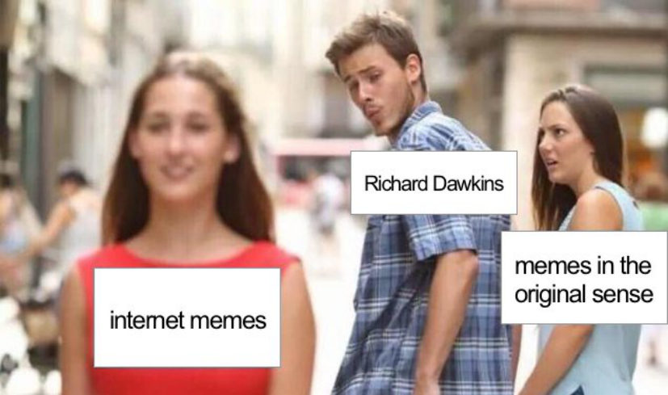
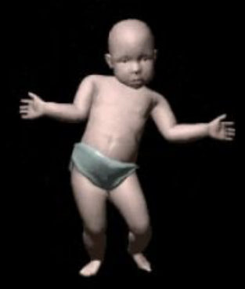
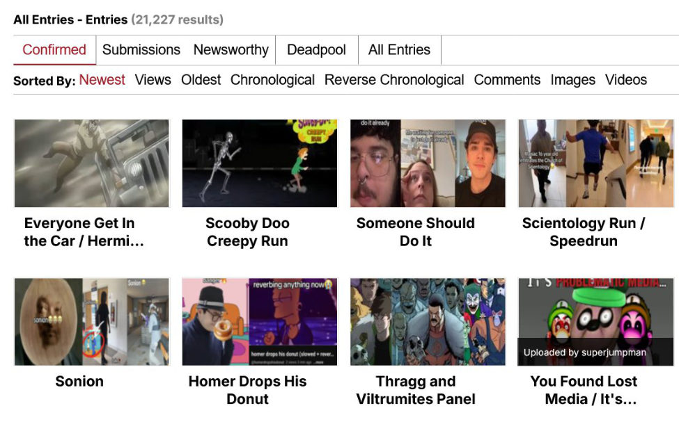
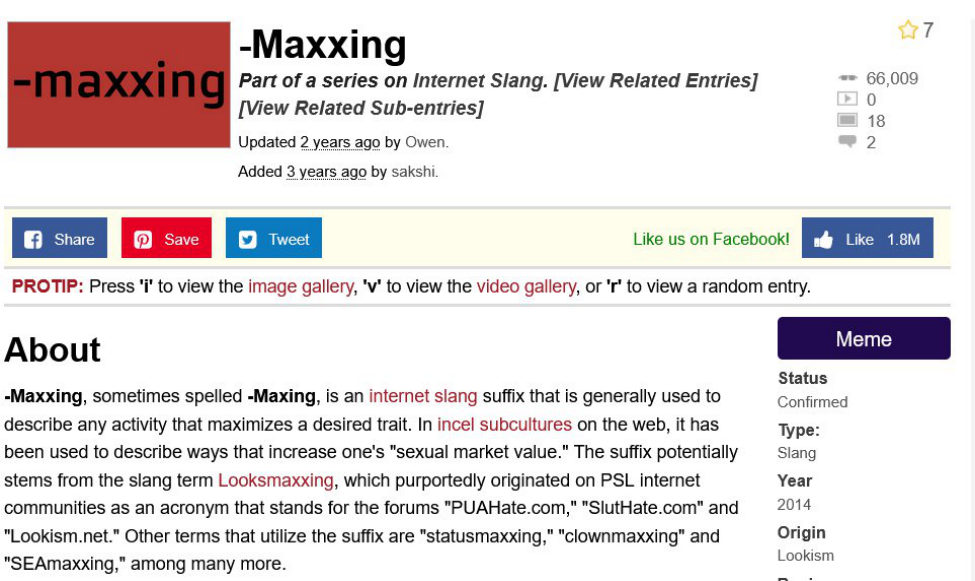
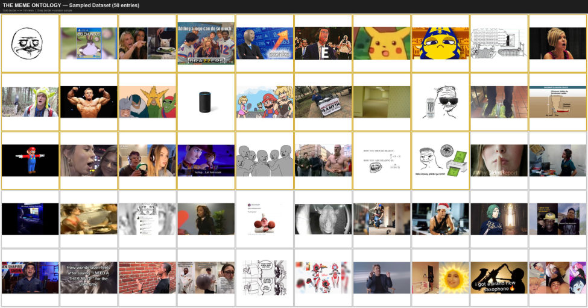
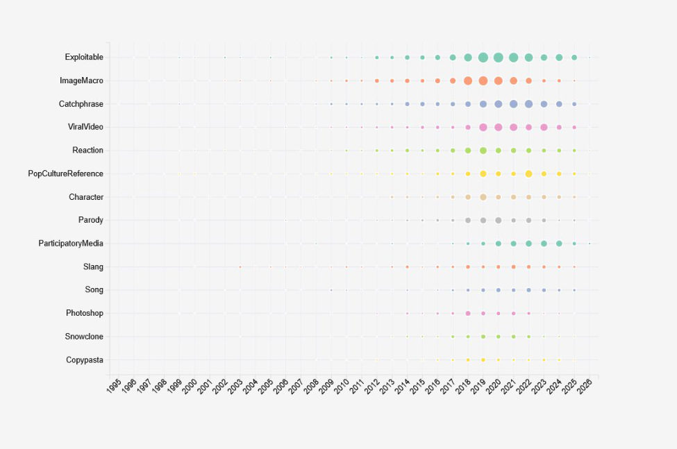
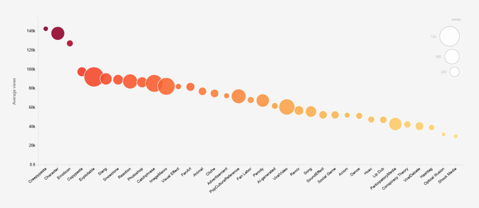
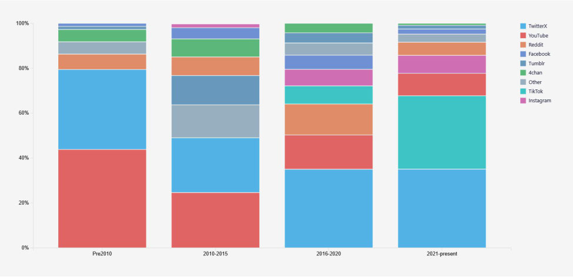
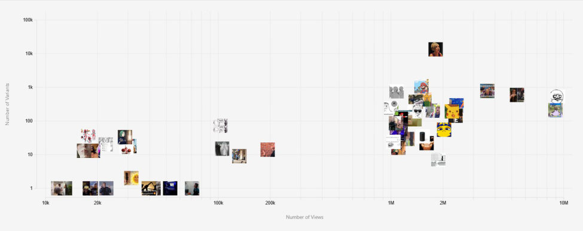
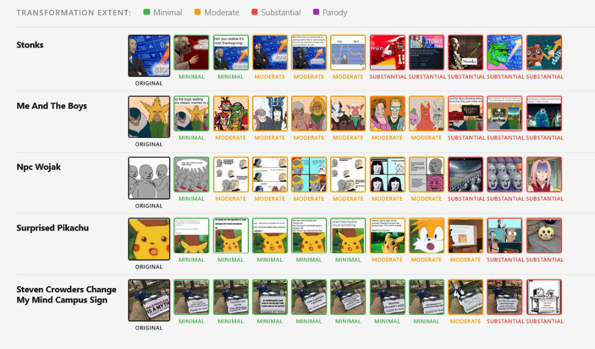

Towards an Ontology of Memes: A Cultural Analytics Study on Viral Images
Alice Picco · Supervisor Fabio Vitali · Co-supervisors Tommaso Campagna, Carlo Teo Pedretti · Session I, A.Y. 2025–2026
Abstract
Internet memes constitute one of the most significant and least formally organized bodies of visual culture produced in the twenty-first century. Despite their cultural ubiquity, scale and relational complexity, no formal domain ontology grounded in bibliographic and iconological theory has yet been developed to classify meme templates, their visual properties and their variant relationships at corpus level. The closest existing resource, the Internet Meme Knowledge Graph (IMKG) (Tommasini, Ilievski, and Wijesiriwardene 2023), is a knowledge graph built for entity enrichment and downstream computational tasks, whereas MEMO is a theory-grounded domain ontology whose primary contribution is the formal classificatory model itself. This thesis proposes MEMO or the MEMe Ontology, the first formal OWL domain ontology of internet memes grounded in bibliographic and iconological theory, developed through a cultural analytics methodology that integrates archival theory, bibliographic modeling, formal ontology and computational image analysis.
The research is organized as a four-stage pipeline producing three interrelated datasets and a populated ontology. A global corpus of 5,000 meme entries is scraped from KnowYourMeme, the largest community-maintained archive of internet meme culture, using a random sampling strategy that collects images alongside five structured cultural metadata fields. A purposively selected subset of 50 entries constitutes the D0 dataset, and a variant dataset of 391 community-contributed variant images is scraped from the KnowYourMeme galleries of the 43 D0 entries that document at least one gallery variant image; the remaining 7 D0 entries have no documented gallery variants on KnowYourMeme.
A formal OWL ontology is constructed in Protégé and organized along two classificatory axes expressed as annotation properties: FRBR/LRM bibliographic levels and Panofsky semantic levels. The ontology contains 33 domain and controlled vocabulary classes (plus four LRMoo classes declared for alignment and documentation), 28 object properties, 14 data properties and approximately 6,500 named individuals, and is populated through three operations: CLIP ViT-B/32 zero-shot classification of 5,000 canonical images producing four pre-iconographical property values per individual; a programmatic pipeline asserting all structured metadata and CLIP-derived classifications onto 5,000 MemeConcept individuals; and manual annotation of the D0 dataset across the ontology's bibliographic hierarchy, covering conceptual descriptions for 50
MemeIdea individuals, Work-level cultural reference assertions, and Expression-level transformation typology annotations on 50 variant individuals.
Five interactive D3.js visualizations are integrated into the MEMO web application. Three address the global corpus: a temporal distribution bubble matrix of format types across the full dataset range; a popularity-by-format chart revealing the unequal distribution of cultural attention across format categories; and a platform succession stacked bar documenting the succession from YouTube and Twitter/X attribution in the pre-2010 period through the platform plurality of 2010–2015, Twitter/X dominance in 2016–2020, and the dramatic rise of TikTok in the 2021–present period. Two address the D0 and variant datasets: a scatter plot of creative productivity against cultural prominence for the 50 sampled entries; and a variant gallery sorted by transformation extent documenting how five canonical templates vary across their annotated variant images.
The findings reveal structural patterns in meme culture that are invisible to individual close reading. The temporal visualization confirms that Exploitable, ImageMacro and Catchphrase formats constitute the foundational and most temporally durable format types in the corpus while TikTok-native formats cluster predominantly in the 2021–present period, documenting the structural shift from static image to short-form video meme culture. The platform succession visualization constitutes direct empirical documentation of that shift, emerging from the wdp:P123 assertions in the ontology — Wikidata's publisher property, reused here as platform of origin — derived from metadata recorded by KnowYourMeme contributors themselves.
The popularity visualization reveals that format category is a predictor of cultural reach, with Reaction and ViralVideo formats generating disproportionate average view counts relative to their corpus size. Together these findings provide empirical grounding for the thesis's central argument: that community-curated archives can be transformed into structured research corpora without losing the cultural intelligence embedded in their metadata, provided the transformation is methodologically transparent about the interpretive character of the source vocabulary.
3Introduction
1.1 The Meme as a Cultural Force
A meme is fundamentally defined by its virality and capacity to spread in a given ecosystem. Evolution and replication concern the domains of nature and culture alike, and the dichotomy between the two has been a central concern of contemporary anthropology. It may be unexpected that the first definition of “meme” (Dawkins 1976, 192) comes from a pre-internet, evolutionary biology theoretical framework. However, Richard Dawkins’ “The Selfish Gene” (1976) first defines the concept of “memes” as cultural artifacts, working on a different but parallel axis for human reproduction and evolution as genes, their biological correspondents.
Dawkins coined the term with the aim of finding the cultural correspondence to genetic replication (Dawkins 1976, 192) stating that “We need a name for the new replicator, a noun that conveys the idea of a unit of cultural transmission, or a unit of imitation.” (Dawkins 1976, 192).
Drawing from ancient Greek root “Mimeme” (“something that is imitated”) (Dawkins 1976, 197), he states that similarly to the genetic pool, memes share a degree of competition between each other to survive in a given ecosystem: the human brain has a finite amount of resources that allow content to be stored, therefore the retention of a meme is determined by its capacity of dominating the surrounding environment – in this case the human brain – at the expense of other “rival” memes (Dawkins 1976, 197). The “selfishness” of genetic transmission to which Dawkins refers to, implies that genes are not passed down with conscious intention but rather blindly replicated in favor of natural selection and with no other purpose beyond their own transmission (Dawkins 1976, 200).
Similarly to genes, memes are also “selfish” in the sense that they behave as if they want to be imitated and reproduced, as if they want to be passed on (Blackmore 1999, 5). In this way, successful memes are the ones that spread at the expense of other, “rival”, memes and unsuccessful memes are those not transmitted enough to be memorable or diffused. However, there are still some significant differences in how genes and memes spread and reproduce.
Like a genetic pool is transmitted through reproduction with relative fidelity, cultural units of significance and memory are shared by human populations in an explicit or implicit manner (Sperber, Hirschfeld 2004, 40) requiring active human participation. While the “selfishness” of these cultural units resembles, to some extent, the reproduction of genetic material, their dissemination is not linear: cultural information is not only imitated but reconstructed through the process of its distribution (Sperber, Hirschfeld 2004, 40), undergoing inevitable distortion and decay.
4According to Dawkins, memes as cultural forces can be identified in catchphrases, melodies, ideas, sayings, tunes and rituals but also “clothes fashions, ways of making pots or of building arches” (Dawkins 1976, 192) which are mutable and subjected to deliberate or unconscious modification by the individuals that transmit them. However, memes – much like genes – are not standalone units that exist isolated and detached from each other. They tend to interact and cluster, influence each other becoming mutually reinforcing.

Units of information like proverbs, sayings, ways of presenting, manners and beliefs often become associated and functional to other related memes creating cultural systems defined as “meme complexes” (Dawkins 1976, 198) or “memeplexes” (Blackmore 1999, 86).
5Religions or political doctrines – each with their rituals, rules, specific architecture or customs, symbols and gestures – can be defined by relational structures made of networked, mutually-reinforcing memes. Therefore, the way to understand “memeplexes”, whether referring to cultural phenomena like Christianity, Democracy, divination or table manners or referring to complexes of internet memes like reaction images, meme templates or character-based memes, is to study their relations to each other.
While the study of memes, or memetics (Aunger 2000, 6), has encompassed different domains and topics – linguistic, cultural, visual, political, aesthetic – no computational and ontological framework has yet been developed to formalize the classification of meme relationships.
1.2 Research Questions
MEMO (the MEMe Ontology) aims to fill this gap through these four research questions:
RQ1 — Ontological
What formal ontological framework is adequate for classifying internet memes as a cultural and digital object, and how must existing bibliographic and archival models (FRBR, Panofsky's iconological method) be extended and integrated to accommodate the specific properties of memes?
RQ2 — Computational
To what extent can computational methods — specifically CLIP zero-shot classification —operationalize the pre-iconographical dimension for a corpus of 5,000 meme images, and what are the limits of this operationalization?
RQ3 — Corpus-level / Cultural Analytics
What structural patterns in meme culture (temporal, relational, platform-specific) become visible through corpus-level computational analysis of a large-scale meme dataset, and what do these patterns reveal about the organization and dynamics of meme culture as a system?
RQ4 — Archival / methodological
6How can community-maintained digital archives like KnowYourMeme be transformed into structured, machine-readable research corpora while preserving the epistemological integrity of their community-curated metadata, and what are the methodological implications of treating folksonomy data as ontological input?
But before the scope and methodological framework of this research is defined, a premise on the appearance of memes as a web-based phenomenon is necessary: when did the meme appear on the internet? And when did it become “visual”?
1.3 The Meme as a Cultural Object
The web was invented to solve a specific problem: how to manage and categorize information through a large research institution where employees worked on different machines and software (Berners-Lee 1999, 4). The history of the web and its developments are fundamental to understand how memes began to be present and spread in the digital world.
The key innovation was not only the storage and retrieval of information, but the concept of hypertext (Berners-Lee 1999, 4). This new technical framework allowed pieces of information to be connected, not just stored. Although the term “hypertext” had already been defined by Nelson, meaning “a body of written or pictorial material interconnected in such a complex way that it could not conveniently be presented or represented on paper.” (Nelson 1965, 96), it found its most prominent application in Tim Berners-Lee’s web architecture.
For the scope of this research, the most relevant innovation introduced by Mosaic is the placement of images in hypertext pages, thus creating “hypermedia” documents (Schatz, Hardin 1994, 3). In February 1993, Marc Andreessen proposed a new inline HTML <img> tag that doesn’t need to be closed and requires specification of the url of the displayed file (src=“url”) (Andreessen 1993). This is the beginning of the “visual” web as we know it and the most important event providing the technical foundation for the rise of future visual meme trends. It is the consolidation of New Media, a new form of media production and distribution started in the 1980s and characterized by new terms: media that is “digital, interactive, hypertextual, virtual, networked, and simulated” (Lister et al. 2003, 13).
7
From the mid-1990s, the Web shifted from being a scientific knowledge organization tool to being a cultural public communication space. While the dot-com bubble collapsed dramatically in 2000-2001 (Lister et al. 2003, 16), the significant investments in digital technology demonstrated the commercial value of the web and established the groundwork for the development of many innovations in education and media distribution, characterizing what was later defined as Web 2.0 (O’Reilly 2005, 17).
While what was retroactively defined as Web 1.0 was mainly characterized by static, read-only, unidirectional knowledge dissemination with limited user interaction, the Web 2.0 favored platform-based experiences (O'Reilly 2005, 22) specifically designed to foster collaboration, participation and user-led creation (Lister et al. 2003, 163).
Before addressing the mass expansion of meme culture in the Web 2.0 era, it is worth noting a shift in the paradigm of production/consumption of knowledge. While the Web 1.0 saw the user almost exclusively consuming content, the Web 2.0 blurred the line entirely of the producer/consumer dichotomy, the user became for the first time a “prosumer” (Toffler 1980, 267) or a “produser” (Bruns 2008, 21), an individual who simultaneously produces and consumes content, receives it and remixes it.
8While the circulation of text-based internet memes is documented to have taken place as early as the 1980s, it is thanks to the new affordances of Web 2.0 platforms and imageboards that the mass expansion of meme culture took place (Shifman 2014, 34).
In 2003, Christopher Poole founded 4chan, an imageboard-based platform. Many of the visual conventions and templates that would later define meme culture, were favored by the anonymous format and the conditions for rapid image sharing, remixing and collective content production (Miltner 2014, 3). The image macro is the dominant visual meme format that emerged in this environment: a picture or drawing with a superimposed text (Shifman 2014, 111). The transition of image-macro memes from niche subcultural imageboard communities to mainstream internet cultural coverage was marked by LOLcats – pictures of cats with incorrectly written captions in Impact font – in 2007 (Miltner 2014, 3).
Around this time, meme templates or “LOL-builders” (Miltner 2014, 13) – websites that allowed users to insert text on an image without needing any graphic manipulation software abilities –also started diffusing. Web applications that allowed users to superimpose a top and bottom text without needing to know how to use or download programs like Photoshop or GIMP, further democratized the development, remix and distribution of memes (Miltner 2014, 13).
The rising democratization of meme production and the shift from consumption of internet content to active collective production of visual material reveal the limitations of the original, pre-internet, definition of meme contained in Dawkins’s “The Selfish Gene”. The idea of the meme as a faithful cultural replicator is not viable anymore, Shifman redefines the internet meme precisely in response to its new participatory logic: a piece of content that spreads through continuous collective transformation, simultaneously consumed, remixed and redistributed by millions of users across networked platforms (Shifman 2014, 18).
It is precisely this diffusion of accessible meme production tools and the consequent proliferation of collectively engineered content that transformed the internet meme into a mass visual cultural phenomenon, generating an enormous and heterogeneous body of visual content that MEMO proposes to classify and analyze through a formal ontological framework.
91.4 The Meme as a Collection
Memes are – in the vast majority of cases – characterized by humor, playfulness or some sort of irony or parodic connotation (Knobel et al. 2007, 209). However, the volume of memetic research and publications implies that – despite their apparent frivolousness – memes are a serious object of academic research and cultural inquiry.
Nevertheless, despite both the scale and the cultural relevance in contemporary society, memes are designed to be ephemeral (Bernstein et al. 2011, 55). Context-based in their meaning, platform-dependent in their distribution and often either anonymous or ambiguous in authorship, memes are designed for immediate consumption rather than long-term preservation.
The platforms on which memes are posted and diffused are subject to policy changes, content removal or discontinuation. Paradoxically, in this way, more content can be lost at once than in the print-only era. While the survival of evidence of primary sources was largely defined by some degree of contingency or “historical accidents”: “One particular monastic library burnt to the ground while another did not; one individual was more diligent at keeping her correspondence than another [...]” (Brügger et al. 2017, 244), the deletion or discontinuation of a platform could mean the entire body of content could be gone.
The problem of digital preservation concerns digitally-native and digitized content alike. In the paper “Scarcity or Abundance?” (2003), Rosenzweig addresses both problems. Physical objects that have been converted to digital formats risk being lost due to format obsolescence and hardware or storage failure: while physical artifacts deteriorate slowly, digital decline is immediate and – in most cases – irreversible or only partly recoverable at great cost (Rosenzweig 2003, 4).
What differentiates digitally-native content from digitized content in preservation is the impossibility of archiving its true essence in the physical world. The characteristics of New Media – “digital, interactive, hypertextual, virtual, networked, and simulated” (Lister et al. 2003, 13) – are defined by the environment that hosts them, which is impossible to render in a non-digital form.
10While memes belong entirely to the second category, they extend it. Memes are not only entirely platform-dependent, but also mostly anonymously produced and context-dependent. Memetic content has, by nature, no defined owner or author to advocate for its preservation (Bernstein et al. 2011, 56), and the archiving of images alone would be largely irrelevant without the concurrent preservation of the cultural context in which they developed and diffused.
The first systematic community-driven effort for meme documentation, contextualization and preservation started in 2008 with the emergence of the platform KnowYourMeme.com, still active today. Created by Rocketboom, a webcast and video production agency (KnowYourMeme n.d.), it functions like a wiki-style encyclopedia of internet culture, where users can send their submissions complemented by human-curated metadata on origin, spread and cultural context.
While Know Your Meme is not a formal academic archive but a community-led initiative, it has produced a large body of documentation that is considered a legitimate primary source for meme research (Shifman 2014, 89). Particularly notable to the scope and methodology of this project, is the use of Know Your Meme in the context of dataset scraping and computational analysis (Zannettou et al. 2018, 2).
With currently over 34,000 entries (KnowYourMeme n.d.), it constitutes the largest documented record for internet culture. Each entry combines image documentation with curated metadata and context, entries are created and maintained by community members with genuine subcultural knowledge and interest. By definition, this process could not be automated as context-dependent references, irony and humor are hard to both generate and interpret without human contributions (Zannettou et al. 2018, 15).
Despite its informality, the platform does not lack a structure. It lacks a formal ontological framework of property and classes, but the entries are organized in a specific way. Significant for the scope of this study, is that the structural organization of the entries implicitly encodes a distinction between different levels of meme identity and manifestation.
11Each entry is organized around a meme as general cultural phenomenon – a trend, a template or a recognizable visual format – rather than a single image instance. Know Your Meme operationally distinguished this blueprint from its own, individual instances.

To make a specific example, the entry Distracted Boyfriend (KnowYourMeme n.d., "Distracted Boyfriend"), documents the template, its stock photo format and its history, context and usage as a broad phenomenon, while its variants are documented as instances and examples of its use, rather than primary objects.
Although this distinction is not formalized on the platform, the implicit differentiation between abstract concept and concrete individual instance mirrors the organizational logic of formal bibliographic models, specifically the FRBR hierarchy of Work, Expression, Manifestation and Item (IFLA 1998, 12) which will be expanded in Chapter 2, Theoretical Framework.
12What is significant here is that the spontaneous convergence between an institutional bibliographic standard and a community-led archival practice suggests that ontological framing is not being artificially imposed on memes – it is already latently present in the way meme culture organizes itself.
However, unlike a formal knowledge base or an ontological standard, Know Your Meme does not impose a predetermined classificatory structure or controlled vocabulary to its entries. The classification happens through community-led informal and unstructured tagging. Each entry can have one or multiple tags assigned arbitrarily by community members in whatever terms users find most meaningful or relevant.
Most of the time the tags are a mixture of visual attributes like templates and formats, descriptive characteristics of the image, context and origin. The users assign tags according to their own subjective interpretative instincts and therefore there is no controlled vocabulary or clear distinction between different semantic areas of a meme. The result is a flat, undifferentiated tag structure in which visual attributes, cultural context, format metadata and descriptive characteristics coexist as equivalent terms with no formal hierarchy or semantic distinction between them.
While tagging is one of the defining characteristics of Web 2.0 (O’Reilly 2005, 17), it is essentially a free-form, unregulated activity: it is user-driven, voluntary and ungoverned by external authorities. This is both the main strength and weakness of “folksonomies”, folk taxonomies (Vander Wal 2007), theorized by Thomas Vander Wal originally in 2004, in a discussion on an information architecture mailing list (Mathes 2004, 3).
Folksonomies lack rules and structure by definition, and this can lead to significant limitations when it comes to retrieving information in large bodies of content. For instance, users apply the same tag in different ways or, on the contrary, the absence of synonym control can lead to different tags being used for the same concept, causing two different but related types of ambiguity (Mathes 2004, 5).
Folksonomies, however, reflect exactly how users think: what they find important or relevant, what catches their eye. Peter Merholz – who preferred the term “ethnoclassification” as he argued the root “taxonomy” implicated some sort of imposed authority (Mathes 2004, 7) – calls these informal collective systems “the digital equivalent to desire lines” (Mathes 2004, 7).
13As much as desire lines are the spontaneously traced alternative foot-worn trails that appear in landscapes over time, where wanderers collectively establish a common but implicit route, folksonomies (or ethnoclassifications) are expressions of collective desires, references and priorities and can serve as a starting point to create an organized vocabulary that truly speaks the users’ language (Mathes 2004, 7).
Classification is never neutral (Bowker, Star 1999, 24). In every classification system – whether formal or not – assumptions on which categories are natural, which distinctions matter and what relationships exist and are sufficiently relevant to be documented, are made. These assumptions may be not consciously made, but they are never innocent: they reflect biases, priorities and perspectives of whoever builds the system (Bowker and Star 1999, 25).
A folksonomy is not the absence of classification, but rather a specific kind of classification that embeds the collective references, shared humor conventions and interpretative instincts of the community of contributors that created it. While Know Your Meme’s collectively curated metadata is valuable cultural material, it is not a neutral nor systematic organizational framework.
However, a formal ontology is equally not neutral. Controlled vocabularies and taxonomies make implicit and accidental classificatory assumptions deliberate and explicit (Noy, McGuinness 2001, 1). The difference between a taxonomy and ontology is not that one is biased and the other is not, but that an ontology is, by definition, transparent about its bias and consistent in its application (Gruber 1993, 4).
1.5 The Meme is Dead
Before going further on the relationship between memes and archival practices and ontological frameworks, an important clarification on the nature of the contemporary meme must be made.
In the moment in which this research is written, the meme is dead (and we killed it).
14Between roughly 2022 and 2026, the dominant unit of internet humor has shifted away from the static captioned image – the "image macro" that defined meme culture from the mid-2000s through the late 2010s – and toward two new vehicles: short linguistic units (suffixes, single adjectives, slang nouns) that travel without any canonical picture, and short audio clips on TikTok, Instagram Reels, and YouTube Shorts that anchor whole families of remixed videos (Zulli and Zulli 2022). The most studied case, the productive suffix -maxxing (KnowYourMeme n. d.), illustrates the trend cleanly: it has no mascot, no Impact-font template, no pre-defined template or image. It is a piece of grammar that can be attached to any noun, and that is precisely why it has spread.
Alongside it, a cluster of text-first memes (brat, demure, delulu, rizz, NPC, sigma, based, brainrot, skibidi), plus a wider ecosystem of slang (mid, slay, ate, no cap, gyatt, fanum tax, bussin) have dominated dictionary words of the year (Oxford University Press 2023, 2024; Collins Dictionary 2024), brand marketing, and even US political campaigns, while video platforms have moved meme transmission from the JPEG to the trending sound.
Image Macros and image-based viral content continue to circulate widely, especially on Reddit and X. Image macros have stabilized as a classical form, while linguistic and audio formats are the generative form (Shifman, 2014), where new memes are being made and where words of the year are being drawn from.
Additionally, many "text" memes do have an originating video or image. Lebron's "demure" TikTok, the brat album cover, the Sigma Face still and the Skibidi Toilet animation all gave their respective memes an initial visual moment. The relevant question is whether the meme survives detached from that source. Brat, demure, rizz, sigma, delulu, based, brainrot, and -maxxing all do: they appear as captions, tweets, headlines, and dictionary entries with no accompanying picture.
Is the visual meme over? Not really, but memes are no longer just visual. They have acquired an even more multilayered and complex nature, and that makes archiving them even more challenging.
However, KnowYourMeme still makes significant effort into including these entries in the database. For the meme to be present on the platform, there needs to necessarily be an associated image, which is fulfilled through text for slang or linguistic based memes, and through selected video frames for audiovisual material.
15
2. Theoretical Framework
While the introduction established memes as meaningful cultural artifacts requiring formal classification, the Theoretical Framework explains the intellectual foundations that make this classification possible.
The proposed grounds for the development of this ontology of memes draw from four distinct but strictly interconnected traditions: archival theory, bibliographic modeling, formal ontology and cultural analytics.
Each tradition contributes a different dimension to the development of the project, and, at the same time, each tradition compensates for the limitations of the others in addressing the specific challenges that this project presents. Archival theory justifies the preservation impulse, bibliographic modeling provides the structural hierarchy, formal ontology provides the formal classificatory logic, cultural analytics provides the analytical methodology.
What unifies these four traditions is a shared interest in the organization of knowledge: how cultural objects are identified, defined, relate to each other and how these can be made analyzable and retrievable at a large scale.
However, none of these traditions alone provides sufficient tools to address the challenges posed by the complexity and ephemerality of visual internet culture. It is their synthesis that this framework proposes.
2.1 Web Archives
There is a fundamental distinction that needs to be made about web archives. On the first hand, the web has been extensively used as a platform to deliver collections that originate in the physical world. For the digital humanities specifically, this concerns largely cultural heritage: digitized manuscripts, scanned photographs, library catalogs and museum collections.
In this case, the web functions merely as an accelerator of accessibility of these sources but they exist independently of it. The digital representation is always preceded by the physical version, both chronologically and semantically (Rosenzweig 2003, 5).
18Digitized collections retain a crucial property: if the digital is lost, the physical is still present (Rosenzweig 2003, 4). Digital loss is recoverable in principle, even if costly in practice. This safety net implies that the digital version of a physical artifact is expendable and in some way, disposable, in a way that the physical original is not.
However, the Web does not simply host digitized versions of pre-existing physical items, but produces its own cultural objects entirely (Brügger and Schroeder 2017, 12). These objects have no physical correspondents, were born digital and never had a physical representation in the first place: they only exist in the digital environment that produced them (Brügger and Schroeder 2017, 5).
The archival consequence of this peculiarity is that digital loss is total and completely irreversible (Brügger and Schroeder 2017, 244). However, the most significant theoretical differentiator between digitized collections and digital native artifacts, considering viral digital trends, is that the Web stops being a mere distributor but becomes both the production ground and the only possible preservation environment (Brügger and Schroeder 2017, 8). Memes are therefore lacking both a preservation safety net against digital loss, an institutional framework for archiving and a physical copy (Bernstein et al. 2011, 1).
The dominant institutional response to web preservation is automated crawling: bots that systematically visit and scan web pages at regular pre-determined intervals without any human interpretation or selection (Brügger and Schroeder 2017, 27). The Internet Archive’s Wayback Machine is the foundational example of this approach. Founded by Brewster Kahle in 1996, it preserves one trillion web pages saved over time (Internet Archive, ND).
However, web crawling archival practices were designed to preserve the web as an information infrastructure rather than preserving its own vernaculars and cultural practices (Milligan 2019, 4). Although the Wayback Machine may not capture cultural content explicitly, it is worth noting that it captures effectively the infrastructures that make the production, remixing and sharing of cultural user-generated material possible.
The visual Web surely concerns images on the Web, but these images are fundamentally preceded by the visual and interactive properties of the infrastructures that host them and in which they are produced. The affordances of a platform are visually rendered in its interface:
19page layout, typography, navigation, scrolling behavior, dynamic loading and algorithmic sorting are all parts of the web page as a cultural object. These interface properties are not neutral, they fundamentally shape how content is encountered, consumed, produced and interpreted (Manovich 2001, 40).
Ultimately, the interface does not only mediate between the content and the user, but remediates the content to the user (Bolter and Grusin 1999,46). The meaning of what the interface carries, is transformed by its own affordances: the same image on a 4chan thread, a Twitter/X feed, a Facebook post or its own Know Your Meme entry does not carry the same cultural connotations, is not consumed by the same community and does not benefit from the same affordances of being remixed or shared.
Despite capturing HTML content of static pages with relative fidelity, the Wayback Machine fails to preserve interactive properties of web pages. Real-time community activity, JavaScript-dependent interaction and algorithmically-generated feeds are not completely translatable into a static snapshot resulting in an inevitable loss and an incomplete archival record of the web as a cultural experience (Milligan 2019, 6).
An adequate archival practice for memetic material therefore requires preserving not just images but the entire surrounding interface context: the affordances of the platform of origin, the community environment and the visual grammar of the space in which the meme circulated. This is precisely what Know Your Meme’s human-curated tagging system provides that automated crawling cannot.
Beyond interface-level loss, institutional crawler-led web archiving faces a further structural limitation: user-generated material falls systematically out of its scope for reasons that go beyond technical capabilities. There is a structural gap in archiving user-generated content and that can be summarized in three distinct reasons.
First, the volume of user-generated material that is produced and diffused daily makes comprehensive crawling impossible: the scale of the phenomenon is too large to be captured comprehensively (Brügger, Schroeder 2017, 46).
20Second, much user-generated content is behind authentication walls, protected by privacy settings, generated dynamically through platform APIs (Brügger, Schroeder 2017, 245). While Know Your Meme is meant to serve as a public repository for documenting meme trends that are born and diffused through other platforms, this is a fundamental consideration to be made when working with private Instagram accounts, closed groups or personal chats.
Third and most significant, interpretation. A crawler can save an HTML page but cannot recognize irony, identify references or acknowledge why a certain image has become popular at a particular time, nor recall the context or the visual grammar that have given meaning to its content. This interpretative limitation is fatal for web archiving of meme culture, as it draws meaning from context and, without that context, the archived image is essentially meaningless (Bernstein et al. 2011,7).
Web scraping operates at a fundamentally different epistemological level from web-crawling (Milligan 2019, 122). While crawling aims to take a comprehensive snapshot of web content as infrastructure, scraping is a research-driven practice. Instead of preserving comprehensively but passively, the researcher who implements a scraping algorithm defines in advance what to collect, from where, and why. Scraping is methodological, intentional, targeted and question-driven.
The selectivity of the scraping process embeds research questions and theoretical assumptions into the dataset before the first image is extracted (Gitelman 2013, 3). Therefore, scraping is not a neutral practice nor is a scraped dataset a neutral sample of reality. It is a curated, methodologically constructed source shaped by research choices at every stage of its creation.
Much like ontologies are also fundamentally biased but transparent about their bias (Gruber 1993, 199), deliberately admitting the constructed nature of a scraped dataset places it on the same epistemological footing as the ontology it feeds: both are theoretical constructions that are stronger for acknowledging what they are rather than pretending to be neutral representations of an objective reality (Gitelman 2013, 3).
Beyond institutional crawling and research-driven scraping a third archival practice has emerged organically, community-maintained archives built by the same communities that produced the content they keep record of (Blank 2009, 2). This is the case of Know Your Meme. These community archives lack institutional authority but possess the cultural proximity and understanding that both crawlers and scrapers cannot autonomously replicate. Their theoretical significance lies precisely in this contextual knowledge, they don’t just preserve the content but the meaning and cultural significance of it as well, which for culturally-complex, semantically multi-layered material is the most archivally significant of the two.
21To think of these three approaches as competing alternatives is not seeing their potential as a combined, collective resource-sharing practices (Gitelman 2013, 6). Institutional crawling, researcher-driven scraping and community archiving can coexist as complementary approaches that address different challenges in the same archival research. As each of the three have different scopes and methods, each serves a different purpose: institutional crawling captures infrastructure, scraping captures targeted structured data, community archiving captures meaning and context. The adequacy of a research method for culturally complex and multi-layered material like memetic content relies on the combination of these approaches rather than relying on a single one alone.
This research relies on the combination of different archival approaches rather than a single tradition. KnowYourMeme provides the culturally-proximate, humanly-curated and contextually-aligned documentation that neither crawling nor scraping alone could produce, the scraping practice transforms this community archive into a structured, machine-readable dataset that can be subjected to computational analysis, while the formal ontology provides the classificatory framework that neither the community archive nor the scraped dataset possesses independently.
Though web archiving frameworks establish the conditions under which meme images can be collected and preserved, they do not address the specific challenge of describing and classifying visual content once it has been collected. Images carry meaning at multiple simultaneous levels that standard archival metadata schemas are not equipped to capture, this challenge is addressed in the following section.
222.2 Archival Practices of Visual Content
While text can be searched, indexed and analyzed directly through computational methods, images cannot be computationally indexed or searched through their content without a classification framework, a labeling standard or an ontological ecosystem.
While archiving a text means preserving something that is already intrinsically retrievable and analyzable on its surface level through well known digital humanities text-analysis practices like collocations, named entity recognition or word frequency analysis, archiving an image means preserving something with no directly accessible meaning from its surface properties alone.
This creates a specific challenge: how to describe, organize and retrieve cultural objects whose meaning is not immediately retrievable on the surface level?
Every visual archive must try to solve this same, specific, fundamental problem: describing an image in language sufficiently to make it retrievable and relatable to other images. Much like the ontological and scraping choices established in the previous section, this process is never neutral as every verbal description of an image involves decisions about what to name, what to highlight and what to leave unsaid or taken for granted.
The institutional response to this challenge has been the development of visual-specific metadata standards. These frameworks represent decades of shared collective effort of library and archival communities to make visual collections searchable, interoperable and preservable across institutions (Baca 2016). The three most relevant standards for this research are Dublin Core, VRA Core and CDWA.
Dublin Core is the most widely adopted general-purpose metadata standard, developed in 1995 by a cross-disciplinary working group in Dublin Ohio and maintained by the Dublin Core Metadata Initiative. It defines fifteen generic descriptive elements applicable to any digital resource: title, creator, subject, description, publisher, contributor, date, type, format, identifier, source, language, relation, coverage and rights.
The strength of Dublin Core lies in its simplicity and universality: any digital object can be described using Dublin Core regardless of the object type or its institutional context. However, this is also its weakness for visual content specifically: the fifteen elements were designed for textual documents and do not accommodate the specific descriptive needs of images (Baca 2016). For meme culture specifically Dublin Core is inadequate as it has no mechanism for capturing visual properties, template relationships, platform of origin or the multi-level cultural meaning of images.
23VRA Core (Visual Resources Association Core Categories) was developed specifically for the description of visual cultural heritage objects and the images that document them. It introduces a crucial distinction missing from Dublin Core: the distinction between a cultural work (the painting, the sculpture, the building) and the image that documents it (the photograph of the painting, the scan of the drawing). As established in the previous section, the work/image distinction is theoretically significant and, in the case of VRA Core, it anticipates the FRBR hierarchy. This shows that the archival community independently recognized the need to distinguish between abstract cultural objects and their concrete representations.
VRA Core defines descriptive categories specifically suited to visual objects: agent, cultural context, date, description, inscription, location, material, measurements, relation, rights, source, stateEdition, stylePeriod, subject, technique, textref, title, worktype (Baca 2016). Its limitation for meme culture is that it was designed for authored, stable, institutionally held works of art: it assumes a known creator, a fixed physical location, a definable style period and a stable cultural meaning. As established, none of these assumptions hold for internet memes since they are anonymous, distributed, rapidly evolving and defined by relational rather than individual object properties.
CDWA (Categories for the Description of Works of Art) was developed by the Getty Research Institute as a comprehensive framework for describing works of art and architecture and it is the most detailed and theoretically sophisticated of the three standards. It defines over 500 categories and subcategories for describing cultural objects; covering object/work, creation, ownership, exhibition history, condition, references and related texts (Baca 2016). CDWA's theoretical sophistication makes it the closest existing standard to a formal ontology for cultural objects, it distinguishes between different types of information about a work and organizes them hierarchically. It is also the basis for the CIDOC-CRM ontology (Doerr 2003, 76) which will be discussed in the Ontologies section, establishing a direct theoretical lineage from archival metadata standards to formal ontologies.
24Its limitations for meme culture are the same as VRA Core: CDWA was designed for canonical works of art with institutional histories, known creators, documented provenance and stable physical forms. Applying CDWA to an anonymous image macro generated on 4chan in 2009 would require either ignoring most of its 500 categories or filling them with null values.
We can summarize the reasons for inadequacy for applying these standards to meme culture of these standards in three main points.
First, authorship assumption: all three metadata standards assume a known or knowable creator. Dublin Core has a creator field, VRA Core has an agent field, CDWA has an extensive creation section. Meme culture is anonymously and collectively produced with no stable authorial identity.
Second, stability assumption: all three standards assume a fixed and stable cultural meaning that can be described once and remain valid afterwards. However, meme meaning is dynamic, context-dependent and constantly evolving through community remixing and reappropriation.
Third, individual object orientation: all three standards describe individual objects in isolation and none of them has an adequate mechanism for capturing the relational structures between objects, the template genealogies, variant families and intertextual references that define meme culture as a system.
All three metadata standards share a common theoretical blind spot: they treat the description of visual subject matter as a single operation when it is, in fact, a combination of distinct and irreducible classification acts happening simultaneously. This problem was identified by Sara Shatford in 1986 in one of the foundational papers of visual information science “Analyzing the Subject of a Picture: A Theoretical Approach”.
Shatford argues that the failure of visual metadata standards is not technical, but primarily theoretical: the standards are not adequate not because they possess the wrong vocabulary or are not organized in the right way, but because they lack a framework to distinguish between fundamentally different types of visual meaning that require fundamentally different analytical and descriptive approaches (Shatford 1986).
25One important distinction to be made is between what an image is of and what an image is about. What an image is of refers to its depicted subject: the figures/people, objects, places, events and conditions that are visually present in the image at varying levels of specificity. What an image is about refers to its conceptual or symbolic meaning: the ideas, themes, values and cultural references that the image expresses or evokes beyond its literal depicted content (Shatford 1986).
These two dimensions are not the same and cannot be captured by the same descriptive operation, yet standard metadata schemas treat them as equivalent, collapsing both into a single subject field.
Additionally, there is a specificity problem within the of dimension. In fact, Shatford further distinguishes between generic and specific levels of depiction. For example: an image can be of "a woman" (generic) or of "the Virgin Mary" (specific). Both descriptions are true and accurate but they operate at different levels of cultural specificity and require different kinds of knowledge to produce.
While the generic level only requires perceptual recognition (anyone can see that an image contains a woman), the specific level requires cultural knowledge as identifying the figure as the Virgin Mary requires some level of iconographic literacy.
This creates another fundamental problem: a metadata schema that only uses generic subject terms misses the culturally significant specificity, while a schema that uses only specific terms presupposes cultural knowledge that not all users share.
The full complexity of Shatford’s analysis becomes even clearer when both dimensions are considered. A single image can simultaneously be:
- Of a woman (generic, at the perceptual level)
- Of the Virgin Mary (specific, at the iconographic level)
- About motherhood (generic concept, at the symbolic level)
- About divine grace (specific concept, at the theological level)
The implication of Shatford’s framework becomes even more clear when it is applied to visual internet culture. If we take the Distracted Boyfriend Know Your Meme entry mentioned before as an example, a meme image can simultaneously be:
- Of a man looking distracted on the street (generic perceptual level)
- Of the Distracted Boyfriend stock photograph (specific iconographic level)
- About infidelity or distraction (generic conceptual level)
- About a specific political or cultural preference being abandoned for a newer one (specific iconological level, the particular meaning of a specific instance)
Standard metadata schemas like Dublin Core, VRA Core, CDWA can capture at most the first of these levels reliably and the second, partially. The third and fourth levels require human contextual knowledge that no automated metadata system can produce.
Therefore, it is not enough to add more fields to a metadata schema. The schema must be theoretically grounded in an understanding of how visual meaning works at multiple simultaneous levels.
The limitations of existing metadata standards and the theoretical problem Shatford identifies both point toward the same conclusion: adequate description of visual cultural objects requires a framework that distinguishes explicitly between different levels of visual meaning rather than collapsing them into a single descriptive field. Panofsky's iconological method provides precisely this framework.
Erwin Panofsky was one of the most influential art historians of the twentieth century (Panofsky 1955). His iconological method, developed across a series of essays and books from the 1930s onwards, proposed a systematic framework for the interpretation of visual meaning in works of art.
Although Panofsky’s iconological method was developed in the context of Renaissance art history, this framework has been adopted beyond its original domain: in visual studies, film theory, semiotics, information science and, more recently, computational image analysis. Its relevance to this research is theoretical, rather than historical. The three-level structure Panofsky proposes maps directly onto the classificatory challenge that existing metadata standards fail to address.
27The first level is pre-iconographical description: the identification of pure visual forms, motifs and configurations without reference to any cultural knowledge. Similarly to Shatford’s perceptual analysis, at this level the interpreter identifies what is literally depicted: a figure, an object, a gesture, a spatial configuration, purely on the basis of perceptual experience. In this case the interpretation can be addressed as “objective” as no cultural knowledge is required, therefore a viewer from any culture and historical period could in principle produce a pre-iconographical description of an image.
The corrective principle at this level is the history of style: familiarity with how objects and figures have been conventionally represented across different periods and traditions. For memes the pre-iconographical level corresponds to the objective visual properties of the image: the presence of people, animals or text, the use of photography versus drawing, color versus monochrome. These properties are computationally extractable, they are what image recognition and computer vision models like CLIP are able to identify through zero-shot classification without requiring cultural knowledge.
The second level is iconographical analysis: the identification of conventional subject matter, stories, allegories and cultural references that the image encodes. At this level the interpreter draws on cultural knowledge to identify what the image conventionally means, for example recognizing a figure as Jesus or the Virgin Mary, a scene as the Last Supper, an attribute as a symbol of a particular virtue or characteristic. Cultural literacy is required: the corrective principle at this level is the history of types, familiarity with the conventional meanings assigned to visual motifs across cultural traditions.
For memes the iconographical level corresponds to the cultural content of the image: the specific template being used, the community convention being invoked, the political or subcultural reference being made. This level requires human contextual knowledge, it is what KnowYourMeme's community contributors provide through their metadata and annotations. It is also partially addressable by CLIP, whose training on internet image-text pairs gives it some capacity to identify conventional meme formats and cultural references, though less reliably than human annotators.
28The third level is iconological interpretation: the identification of the underlying cultural values, ideological principles and collective mentalities that the image unconsciously expresses. At this level the interpreter moves beyond what the image intentionally depicts or conventionally means to what it intrinsically reveals about the culture that produced it. The corrective principle at this level is the history of cultural symptoms: familiarity with the essential tendencies of the human mind as expressed across different cultural periods. This is the deepest and most cognitively demanding level. It requires not just cultural literacy but cultural analysis, the ability to read an image as a document of the collective unconscious of its time and place.
For memes, the iconological level corresponds to what a meme reveals about the collective anxieties, values, humor conventions and ideological dispositions of the community that produced and circulated it. This level is not directly addressable by computational methods, it requires human interpretation. It is partially captured by KnowYourMeme's community metadata but only implicitly: contributors document cultural context without necessarily theorizing the deeper cultural values their descriptions reveal.
Panofsky insists that the three levels are not separate operations but dimensions of a single unified act of interpretation and that in practice they are always already intertwined. The pre-iconographical and iconographical levels feed into the iconological: you cannot fully interpret what an image symptomatically reveals without first understanding what it depicts and what it conventionally means.
For meme analysis this integration is particularly important. The iconological meaning of a meme (what it reveals about its culture) is inseparable from its iconographical meaning (which template it uses, which community it addresses) which is inseparable from its pre-iconographical content (what the image literally shows). A classificatory framework that addresses only one or two of these levels will produce a reductive and potentially misleading picture of meme culture.
The horizontal classificatory dimension of the MEMO ontology's semantic axis is directly grounded in Panofsky's three levels of visual meaning:
29— Objective visual content corresponds to the pre-iconographical level: the literal visual properties of the image extractable without cultural knowledge — the presence of people, animals or text, the use of photography versus drawing, color versus monochrome. These properties are computationally extractable by CLIP without cultural knowledge.
— Cultural content and semantic relationships corresponds to the iconographical and iconological levels: the cultural meaning of the image, the references it makes, the template it belongs to, the community context it addresses and the relational structures it participates in. The iconographical level requires cultural knowledge of conventions; the iconological level requires hermeneutic judgment. These properties require human annotation.
Grounding the ontological categories in Panofsky's framework provides a theoretical justification for the categories, showing they are not arbitrary but reflect fundamental distinctions in how visual meaning works. Additionally, it establishes the division of labor between computational and human analysis as computer vision models can address the pre-iconographical level but human annotation is necessary to address the iconographical and iconological levels. However, while Panofsky's framework was developed for single-medium images in which visual content is the sole carrier of meaning, Internet memes challenge this assumption as they are multimodal and semantically multilayered objects that combine visual content, typographic choices and linguistic content into a single inseparable cultural unit.
For instance, the text superimposed on a meme image is not separable from its visual substrate. The meaning emerges from their combination, not from either element considered independently. Therefore, it is necessary to consider a meme holistically. Panofsky's framework must be extended to accommodate this multimodal dimension: the pre-iconographical level must include the linguistic content of the superimposed text and the iconographical level must account for the conventional meaning of the text-image combination, not just the image alone (Mitchell 1994, 65).
The adequate classificatory framework for visual internet memes must therefore be hybrid: combining computational feature extraction for the pre-iconographical level with human-curated contextual metadata and manual annotations for the iconographical and iconological levels. This is precisely the multimodal combination this research proposes: CLIP for objective visual feature extraction, KnowYourMeme's community metadata for cultural context and manual annotation for variant analysis, and a formal ontology to integrate both within a structured and machine-readable classificatory framework. Each component of the hybrid addresses precisely the level of visual meaning that the others cannot (Panofsky 1955, 28).
30However, while Panofsky's framework establishes what needs to be classified, it does not provide the formal logical apparatus for expressing these distinctions in a machine-readable, computationally tractable way. That formal apparatus is provided by the bibliographic and ontological frameworks developed in the following two sections.
2.3 The FRBR Model
While archival practices for visual content establish what needs to be classified and the different levels of visual meaning that an adequate ontology of memes must capture, the FRBR model provides a formal model for expressing the relationships between abstract cultural objects and their concrete realizations, grounding the analysis of visual material in a structural hierarchy. As anticipated in both the introduction and the previous section, KnowYourMeme's community archive independently reached an organizational logic that mirrors FRBR's core categories.
Functional Requirements for Bibliographic Records emerged from a crisis in bibliographic control. By the 1990s, the proliferation of formats, editions, translations and versions of cultural works exposed the inadequacy of traditional catalog records and archival practices (IFLA 1998, 1). Traditional cataloging described physical items without adequate specificity for expressing the relationships between those items and the abstract intellectual works they represent and embody.
In 1992 the IFLA study group was tasked with producing a conceptual model (IFLA 1998, 2) that could capture these relationships. The FRBR model was published in 1998 as a fundamental rethinking of what bibliographic description consists of. The model was organized around user tasks rather than cataloging convenience (IFLA 1998, 3). The actions of finding, identifying, selecting and obtaining cultural objects became the center of the documentation process and shifted the focus from describing items to describing works and their relationships.
31FRBR's most important theoretical contribution is the distinction between the Work as an abstract intellectual entity and its concrete physical or digital realizations. Before FRBR, bibliographic description focused on the physical item without adequate tools for expressing its relationship to the abstract work it embodied. This limitation meant that catalog records for different editions of the same novel, different recordings of the same symphony or different translations of the same text appeared as unrelated objects rather than as related realizations of a single intellectual creation. FRBR provided the conceptual tools to make these relationships explicit and formal, transforming the catalog from a list of items into a map of intellectual relationships (IFLA 1998, 7).
Since its publication FRBR has been applied well beyond library cataloging demonstrating that its underlying logic captures something general about the nature of cultural objects rather than something specific to bibliographic records.
If we think of a musical piece, for example, the work/expression/manifestation hierarchy maps naturally onto the relationships between a musical composition, a specific performance and a specific recording. For moving image, the distinction is between a film as an intellectual work, a specific cut or version as an expression and a specific screening of it as a manifestation. Cultural heritage institutions and museum collections increasingly use FRBR-derived models (Riva, Le Bœuf, and Žumer 2017, 12) to express the relationships between original artworks, reproductions and digital copies. These applications demonstrate that FRBR is not a library-specific technical standard but a general model for the ontological structure of cultural objects.
As established, a rudimentary and community-driven version of a FRBR mapping on viral images is already implemented on Know Your Meme. The decisive criterion for applying the hierarchy is the identity-bearing role of the Work: in FRBR, the Work is what individuates a cultural object, so that two objects realizing the same Work are realizations of the same thing. For memes, the entity that satisfies this criterion is the template itself: a hand-drawn redraw of Distracted Boyfriend shares no pixels with the original stock photograph, yet it is unmistakably the same meme. What all such realizations share is not an image but an abstract creation — the template as a recognizable format. The template, therefore, is the Work.
32To take Distracted Boyfriend as an example:
Work: The Distracted Boyfriend template as an abstract creation: the named, community-recognized format that all its realizations share, documented by the KnowYourMeme entry. The Work is what makes two visually different images instances of the same meme.
Expression: Each distinct creative realization of the template in perceivable signs. The original uncaptioned stock photograph is itself an Expression — the originating Expression of the Work, the first realization through which the Work came into existence. Every captioned variant, redraw, crossover or localization is a further Expression of the same Work: a specific combination of image and text that realizes the template in a distinct creative form.
Manifestation: The embodiment of an Expression in a specific digital form. The same captioned variant circulating as a 1200×800 JPEG, as a PNG, or as a recompressed re-upload constitutes different Manifestations of the same Expression: different file formats and resolutions of one and the same creative realization.
Item: A single localized copy of a Manifestation: the file hosted at a specific URL on a specific platform at a specific moment — one Reddit upload, one Twitter/X post, one copy on KnowYourMeme's content delivery network.
The mapping works because memes genuinely exhibit the same ontological structure that FRBR was designed to capture: an abstract creation realized in multiple concrete forms. Different image-text combinations produce different Expressions, each a distinct creative realization of the same Work; different file formats, resolutions and platform uploads produce different Manifestations of the same Expression; each individual upload constitutes a distinct Item.
One element of meme culture, however, sits above this hierarchy. The abstract cultural concept that a template encodes — for Distracted Boyfriend, the idea of a subject being distracted from a commitment by something new — is not the Work itself but the conceptual nucleus that the Work crystallizes. The same concept can be crystallized by several distinct templates, which remain distinct memes; the concept therefore cannot individuate them and cannot be the Work. FRBR has no entity for this pre-Work conceptual level, and its formalization in MEMO as the MemeIdea class constitutes a deliberate extension of the bibliographic model — one for which the current IFLA standard offers a foothold: LRMoo accommodates the grouping of Works sharing a common concept, an idea long discussed under the term 'superwork,' by relating Works to the CIDOC CRM class E28 Conceptual Object.
33However, despite this structural homology FRBR has significant limitations when applied to memes and those must be acknowledged in order to consider FRBR as a ground for a viral image ontology.
FRBR's Work entity assumes a creator, even if anonymous, but meme templates often have genuinely indeterminate authorship where the originator cannot at all be identified. The model adopted here mitigates this difficulty: the identity-bearing Work is the community-documented template, whose existence is established by collective recognition rather than by an authorial act, and which — in line with LRMoo's principle that the creation of a Work coincides with the existence of its first Expression — comes into being with the circulation of its originating image. The genuinely blurry boundary moves one level up: it lies between the conceptual nucleus and the Work, in the question of when a recurring cultural concept crystallizes into a new, distinct template — a question that FRBR does not pose and that MEMO's MemeIdea level makes explicitly addressable.
Moreover, the FRBR model was designed for cultural objects that change slowly and steadily. Thinking of textual editions, they are created, translated and preserved through long intervals of time. Meme templates can be created, exhausted and forgotten within weeks, they cannot be considered to embody the same degree of staticity of written works.
FRBR has no native mechanism for capturing the complex intertextual relationships between memes like parodies, references, derivative templates. The memeplex structures established by Dawkins are larger complex networks of cultural information that cannot be summarized by isolating the entries from their surrounding context.
These limitations are not reasons to abandon FRBR but to extend it, considering FRBR's structural hierarchy as the foundation to meme categorization, adding a relational and contextual dimension.
34It is important to note that in 2017 IFLA published the Library Reference Model (Riva, Le Bœuf, and Žumer 2017, 6), a consolidation and generalization of FRBR and its companion models FRAD and FRSAD into a single unified framework. LRM retains the core Work/Expression/Manifestation/Item hierarchy while addressing some of FRBR's limitations. This revised model is more flexible in its treatment of collective authorship, anonymous creation and the relationships between works.
For the purposes of this research FRBR remains the primary conceptual reference because of its wider recognition and its historical role in establishing the theoretical distinctions this project builds on. The formal alignment of the ontology, however, is made to LRMoo, the object-oriented OWL publication of the current IFLA Library Reference Model: MEMO's domain classes are declared as subclasses of the LRMoo Work and Expression classes (Chapter 3), bringing the model into alignment with the current institutional standard. LRMoo's refinements are directly relevant to memes: its flexibility toward collective and anonymous creation, its principle that Work creation coincides with the first Expression, and its superwork mechanism for grouping Works under a shared concept all map onto features of meme culture that the 1998 model accommodated only awkwardly.
FRBR provides the structural hierarchy for organizing meme objects across levels of abstraction: from abstract template to individual file instance. However, FRBR is a conceptual model, not a formal ontology, as it describes relationships informally in natural language without the logical apparatus necessary for machine-readable classification and computational querying.
A formal ontology extends FRBR's bibliographic logic into a computationally tractable framework by adding defined classes, properties and relationships that FRBR's conceptual model implies but does not formally specify. The following section develops the theoretical foundations of formal ontology as the next component of this theoretical framework.
352.4 Ontologies
While the FRBR model expresses hierarchies between different semantic and ontological layers of an artifact, it does so in natural language. Therefore, these classifications are not machine-readable for classification nor suitable for computational querying.
The distinction between a conceptual model and an ontological framework lies in this difference specifically. A formal ontology extends the differentiation logic of a conceptual framework in a structured schema. Therefore, what makes an ontology different from a conceptual framework is the explicit specification of conceptual relationships in a language with defined syntax and semantics.
The foundational definition of ontology in the information science and computer science domain is Thomas Gruber's formulation: "a formal explicit specification of a shared conceptualization" (Gruber 1993, 199). Each word in this synthetic delineation of what an ontology is, carries significant theoretical importance and deserves an in-depth explanation.
An ontology is by definition formal, because it is not expressed in natural language but in a language with defined syntax, vocabulary and semantics that can be processed by machines and software. An ontology is explicit because classes, relationships and properties need to be stated directly in order for it to be valid, nothing must be left to assumption.
Additionally, an ontology is a specification: a description, a theoretical model of a domain. It is fundamental to note that an ontology is not the domain itself, but rather it makes claims about how to represent a portion of reality, not reality directly.
An ontology must be shared, as it represents an agreement, a consensus or a standard on a specific view of a domain. It is meant to be intersubjective and interoperable, as well as designed for use of multiple agents across different contexts or institutions.
In conclusion, an ontology is a conceptualization. As established, it models a particular and specific conception of the world, a defined way of organizing knowledge about a domain, which is always a theoretical choice whose constraints are made explicit and consistent rather than left implicit or accidental.
36After having identified what an ontology is, it is useful to acknowledge what it is not. Ontologies are not the only kind of existing knowledge organization tool. This distinction matters for establishing what this project contributes that tools like KnowYourMeme's folksonomy or standard metadata schemas do not.
A taxonomy, for example, classifies objects into hierarchical categories but specifies no formal relationships beyond the is-a hierarchy. It makes explicit what something is but not how it formally relates to other things (Noy, McGuinness 2001, 1). A thesaurus organizes terms by semantic relationships: broader, narrower, related; but without the logical axioms that allow machine reasoning. A controlled vocabulary standardizes terminology without specifying formal relational structures between terms. It addresses the synonym problem but not the problem of semantic relationships. A folksonomy, as established in the introduction, is an informal emergent classification with no controlled vocabulary, no formal hierarchy and no semantic precision (Mathes 2004, 5).
What distinguishes an ontology from all of these is the addition of formal logical axioms. These formal logical axioms can be defined as classes with specified membership criteria, properties with defined domains and ranges, and inference rules that allow machines to reason about the domain rather than merely retrieve from it (Gruber 1993, 199).
It is important to note that an ontology does not replace these other tools but formalizes what they do informally: a taxonomy becomes a class hierarchy, a controlled vocabulary becomes a set of defined class labels, semantic relationships become formal object properties (Noy, McGuinness 2001, 2).
As established, classification is never neutral (Bowker, Star 1999, 24) and ontologies are no exception. The advantage of a formal ontology over informal classification is not that it eliminates bias but that it makes its theoretical assumptions explicit, consistent and open to critical scrutiny rather than leaving them embedded implicitly.
The development of formal ontologies in computer science is inseparable from Tim Berners-Lee’s Semantic Web vision (Berners-Lee 1999). Originally, the Web was designed for human consumption. Hyperlinks connected documents and resources for readers and users but there was no information on the semantic correlation of those connections, as well as machines are not able to autonomously infer nor interpret their meaning.
37The Semantic Web proposes to add a machine-readable semantic layer on top of these existing relationships and ontologies are the mechanism through which this meaning is made explicit and formal. Ontologies define classes and relationships that allow machines to reason about web content rather than merely indexing or retrieving it by keyword matching.
The languages developed for Semantic Web ontologies provide the technical apparatus for the classification to be machine-readable: RDF for describing resources and their relationships as subject-predicate-object triples, OWL for defining formal ontological classes, properties and restrictions (Noy and McGuinness 2001, 2).
This project is a contribution to the Semantic Web vision applied to memetic culture: it proposes to make a body of complex web-native cultural material machine readable and formally described. It is imagined as a way to close a circle: the Web was invented to organize information and knowledge, memes have emerged as a “collateral” product of the Web, the proposed ontology of memes aims to organize knowledge about memes using the Web's own formal knowledge representation tools.
The closest existing resource in this space is the Internet Meme Knowledge Graph (IMKG) (Tommasini, Ilievski, and Wijesiriwardene 2023), which demonstrates that Semantic Web technologies can capture meme semantics at scale. Its orientation, however, is fundamentally different: IMKG is a knowledge graph built for entity enrichment and downstream computational tasks, whereas MEMO is a theory-grounded domain ontology whose primary contribution is the formal classificatory model itself — the explicit, reasoner-verifiable integration of the FRBR/LRM bibliographic hierarchy and Panofsky's iconological levels into a single classificatory framework. The two resources are therefore correlated but different in scope and methodology: one provides large-scale entity linkage, the other the classificatory theory through which meme objects and their relationships are formally defined.
The MEMO ontology organizes its classificatory structure along two horizontal axes. The first axis covers objective visual content, corresponding to the pre-iconographical level: the literal visual properties of the image extractable without cultural knowledge, computationally addressable through CLIP. The second axis covers cultural content and semantic relationships, corresponding to the iconographical and iconological levels: the cultural meaning of the image, the references it makes, the template it belongs to, the community context it addresses and the relational structures it participates in. This level requires human contextual knowledge.
38While these classificatory dimensions operate horizontally, by describing the properties of meme objects at any given level, the FRBR hierarchy operates vertically, by organizing those objects across levels of abstraction from Work to Item. Together these two frameworks constitute a two-dimensional classificatory system.
- Above the Work level, the ontology captures the conceptual nucleus that a template crystallizes: the abstract cultural concept that exists independently of any specific named format, formalized as the MemeIdea class as a deliberate extension of the bibliographic hierarchy
- At the Work level it captures the properties of the recognized and documented meme template as a specific named format: the identity-bearing creation that all variants of a meme share
- At the Expression level it captures variant images such as particular caption combinations, redrawn versions, crossovers and localizations: each a distinct creative realization of the template Work. The canonical representative image of each template is the Work's originating Expression
- The Manifestation and Item levels — the embodiment of a variant in a specific file format and resolution, and the individual localized copy at a specific URL on a specific platform at a specific moment of circulation — are not modeled as separate classes in MEMO. Manifestation-level information is addressed through the object property
dcterms:format, pointing to FileFormat controlled vocabulary individuals; Item-level information throughmemo:imageFilePath,memo:imageFilename,memo:variantImageURLanddcterms:modified, recording the file location, local filename, CDN URL and scraping timestamp of each retrieved copy. The CDN copy and the locally downloaded copy of the same image are, in FRBR terms, two Items of the same Manifestation. This design reflects a deliberate scope decision: the research documents templates and variants as cultural objects, not the individual embodiments and platform-specific copies of their circulation.
Noy and McGuinness's Ontology Development 101 provides the most widely used practical methodology for defining classes and their hierarchy, defining properties and creating instances. A key theoretical principle is that there is no single correct ontology for any domain as different ontologies reflect different theoretical perspectives on what distinctions matter. The transparency of a formal ontology is therefore its primary advantage: it makes its biases explicit, consistent and open to be discussed and criticized.
A formal ontology provides the classificatory structure for describing and relating meme objects in a machine-readable framework but classification alone does not constitute analysis. While the ontology describes what memes are and how they relate to each other, it does not by itself reveal the patterns, clusters and trends that make the dataset culturally meaningful. The analytical methodology for detecting those patterns at scale is provided by cultural analytics. The following section develops the theoretical foundations of cultural analytics as the final component of this framework.
2.5 Cultural Analytics and the Digital Humanities
The theoretical framework section of this research has progressively built the intellectual foundation for this project through three distinct traditions.
Archival Theory and Web Archives established the conditions under which meme images can be collected and preserved and justified the combination of community archiving and researcher-driven scraping as an adequate archival strategy.
Archival practices of visual content and the FRBR model established what needs to be classified (Panofsky's three levels) and how to organize the resulting classifications hierarchically (FRBR's Work/Expression/Manifestation/Item structure).
Formal ontologies established the machine-readable classificatory framework that formalizes both Panofsky's categories and FRBR's hierarchy into a computationally tractable and machine-readable specification.
40However, the combination of these three theoretical foundations does not provide an analytical framework, but rather a classificatory one. Archival theory, bibliographic modeling and formal ontologies explain how to collect, describe and formally organize cultural objects, but not how to analyze them at scale, detect patterns across them or produce interpretable cultural knowledge from large datasets. The questions that motivate this research: what visual patterns recur across meme culture, what relational structures define meme genealogies, what temporal and platform-specific trends are visible in the dataset – cannot be answered by the ontological framework alone.
They require a methodology for operating on the classified dataset at scale: detecting patterns, identifying clusters, mapping relationships and rendering the results in a form that produces cultural insight.
Cultural Analytics provides the theoretical and methodological foundation for treating cultural objects as large-scale datasets subject to computational analysis and visualization (Manovich 2020, 1). It is the tradition that bridges the gap between computational analysis and formal classification and cultural interpretation. In the specific case of this project, cultural analytics methodologies are crucial to bridge the gap between what is classified and how, and the meaning that emerges from it: between what the ontology describes and what the analysis reveals.
It is fundamental to note that cultural analytics is an extension of more traditionally humanistic ways of understanding information. Cultural analytics aims to add a new analytical register that operates at a broader, more distant scale that would otherwise be impossible for individual human readers or viewers alone (Manovich 2020, 25).
The choice of cultural analytics rather than generic computational analysis or data science is theoretically motivated. Cultural Analytics is specifically designed for cultural objects and treats them as carriers of significant qualitative information rather than neutral data points. This analytical framework preserves the humanistic commitment to meaning, context and interpretation while adding computational scale and precision.It has an established tradition of application to visual culture and Manovich's own work on art history, cinema and design demonstrates what computational visual analysis can reveal when applied to large cultural datasets (Manovich 2020, 104).
41To understand what cultural analytics contributes and why it is necessary here, it is worth situating it within the broader disciplinary context from which it emerges, specifically the text-centric tradition of digital humanities and the gap it leaves for visual culture.
In its Cultural Analytics (2020), Lev Manovich argues that “Digital Humanities is text heavy, visualization light, and simulation poor.” (Manovich 2020, 11). In fact, the Digital Humanities as a discipline have a precise founding moment strictly related to computational text analysis. Roberto Busa's Index Thomisticus began in 1949 in collaboration with IBM (Hockey 2004, 3). It was the first large-scale computational analysis of a textual corpus and is recognized as the beginning of Digital Humanities as a field of study.
This founding project established the basic logic that has shaped the field ever since: treating a large textual corpus as a structured dataset amenable to systematic querying and pattern detection. The choice of text was not arbitrary as the linguistic surface of a text is also its primary carrier of meaning, making text uniquely tractable computationally in a way that images are not.
However, the analytical power of computational analysis comes from scale. When analyzing a corpus of thousands of texts, it is possible to notice patterns of literary history, genre evolution and cultural trends otherwise invisible when performing individual reading of single texts. This is the logic of Moretti's distant reading: patterns that define literary culture only become visible when you step back from individual texts and analyze the corpus as a whole (Moretti 2013, 48). Over the years, the Digital Humanities have developed increasingly sophisticated tools for this such as corpus linguistics, topic modeling, sentiment analysis, word embeddings, all oriented toward extracting cultural knowledge from large textual datasets.
Despite the power of the distant reading and corpora logic and its possible application to the visual media field, visual culture has been largely excluded from it in digital humanities. The reasons for this discrepancy are both technical and theoretical (Drucker 2011). Computationally, images lack the discrete meaningful units that make text tractable; theoretically, the field lacked frameworks for treating images as cultural data without losing their meaning.
Cultural analytics was coined by media theorist Manovich in 2007 as a proposal to apply computational methods and data visualization to the analysis of large cultural datasets (Manovich 2009). The foundational claim is that cultural objects such as artworks, films, novels, images, can be treated as data points in a large dataset without losing their cultural significance.
42The shift Manovich introduces is from micro to macro. As humans are not capable of imagining thousands of data points without the artificial aid of visualization, new approaches need to be applied to shift from the close analysis of individual objects to the detection of patterns across entire cultural corpora (Manovich 2020, 1). This macro perspective adds a new analytical register to close reading and traditional humanistic interpretation.
The most direct precedent for this research is Manovich’s ImagePlot project (Manovich 2020, 169). ImagePlot is a computational analysis of a dataset comprising hundreds of thousands of artworks from multiple museum collections. It mapped artworks by measurable visual features such as brightness, saturation, hue, contrast, composition, plotting them in a two-dimensional visual space where proximity encodes similarity. This produced patterns in art history that are genuinely impossible to envision through individual viewing (“ImagePlot Visualization Software,” 2011, https://github.com/culturevis/imageplot).
Manovich's cultural analytics framework identifies five key operations that combined together constitute the analytical pipeline from raw data to interpretable knowledge (Manovich 2020, 20). These operations are not independent techniques but rather sequential and interdependent stages of the same process. Each one of these stages produces the input for the next, and a failure or discrepancy at any stage propagates through the entire pipeline. The pipeline as a whole transforms a collection of cultural objects into a visual representation of the patterns that structure them.
The first operation is the systematic gathering of a large and representative corpus of cultural objects. Like textual corpora, a corpus of images should be large enough to support pattern detection. Patterns emerge from aggregates of individual objects, an adequate analysis is only possible if enough data points are available to be aggregated.
As established in previous sections, what is included and excluded shapes what patterns can and cannot be detected. No dataset is neutral and, therefore, the composition of the corpus is a theoretical choice (Gitelman 2013, 3). For instance, random sampling is the appropriate strategy when the goal is to characterize the general properties of a population rather than to study specific objects in depth.
43The second operation is the computational identification of the measurable properties of each object in the corpus. Visual content feature extraction produces a numerical representation of each image. This is what makes images computationally tractable in the same direct way text can be. By encoding an image into a high-dimensional vector of values representing its visual and semantic properties, they can then be compared, clustered and plotted.
Early cultural analytics used low-level visual features such as brightness, saturation, hue, contrast and edge density. These parameters capture formal visual properties without cultural interpretation, in a parallel to Panofsky's pre-iconographical level. However, thanks to technological advancements and new implementations in machine learning and computer vision techniques, more recent approaches use deep learning models like convolutional neural networks and contrastive language-image models like CLIP. These models extract higher-level semantic features capable of capturing some cultural content, reaching toward (but not quite arriving at) the iconographical level.
The choice of which features to extract is also a theoretical decision and it determines what dimensions of the objects are made analytically visible and what dimensions are suppressed or not taken into consideration.
In this research, feature extraction operates at the pre-iconographical level: CLIP's zero-shot classification populates memo:hasImageType and memo:hasSubjectMatter as object properties pointing to controlled vocabulary individuals, and memo:hasTextPresence and memo:isColor as boolean data properties. The iconographical level (MemeFormat) is populated from KnowYourMeme's structured type metadata rather than from CLIP, reflecting the division of labor between computational and community-curated classification established in the Theoretical Framework.
Feature extraction in this research therefore serves a dual purpose:it populates the pre-iconographical properties of the ontology — memo:hasImageType, memo:hasSubjectMatter, memo:hasTextPresence and memo:isColor — while simultaneously producing a structured numerical record of the visual properties of each image that can be used for cross-corpus comparison.
Visualization is the final stage of this research process and in Manovich's framework the most important operation (Manovich 2020, 187). Manovich introduces it as the medium through which patterns in large datasets become visible and interpretable by humans. Most importantly, it is the moment at which computational findings become clearly legible and can be subjected to cultural interpretation.
Drucker’s Graphesis (2014) develops an important theoretical reflection on data visualization. According to Drucker, a visualization is not the mere output of the analytical process, but a distinct act of analysis (Drucker 2014, 1-2). Visualization is always an interpretive act that produces knowledge through its formal choices rather than neutrally representing pre-existing data points. Consequentially, every choice in the design and methodology of a visualization is a theoretical decision that shapes what emerges from the visualization itself.
Therefore, it is these choices that determine what will be seen and therefore what can be known. Elements in visualization like color codes, position and scale determine importance of items and relationships. Two visualizations of the same dataset, for instance, can draw attention on completely different aspects thus revealing different patterns.
As established, Moretti’s distant reading is epistemologically aligned with Manovich’s claim on seeing cultural data as computationally treatable large datasets. While distant reading operates on the linguistic surface of textual material, the equivalent for visual corpora is what Arnold and Tilton have formalized as distant viewing (Arnold and Tilton 2019, i3).
Like distant reading for textual corpora, distant viewing analyzes large image corpora computationally to detect visual patterns, stylistic trends and formal regularities across thousands or millions of images. The term describes a genuine methodological shift where the unit of analysis moves from the individual image to the corpus as a whole. Arnold and Tilton argue that distant viewing requires explicit attention to the relationship between the features that can be extracted computationally and the interpretive categories that matter culturally (Arnold and Tilton 2019, i4-i5).
45However, one could argue that distant reading for textual corpora is methodologically powerful but not strictly necessary. For instance, a very dedicated scholar could, in principle, individually read a very large number of text and draw the connections between them. For memetic images, this is not possible. For meme culture distant viewing is theoretically necessary in a stronger sense. The patterns that define meme culture do not exist at the level of individual images at all, they are emergent properties of memes in relation to each other and, in a broader sense, of memetic culture as a system.
Seven properties of meme culture that only exist at the corpus level and are invisible at the level of individual images can be identified:
- Template genealogies: the relationships between a meme template and its variants are not visible in a single image, they require the corpus to be analyzed relationally. Additionally, a template is by definition something that exists in repetition, a container that is reproposed to accommodate similar but different contents.
- Format conventions: what counts as a conventional format only becomes apparent when enough examples are aggregated to distinguish convention from exception.
- Temporal trends: how meme culture evolves over time requires the corpus to be analyzed across its temporal dimension, invisible in a single image.
- Platform-specific aesthetics: what is distinctive about memes from 4chan versus Reddit versus Instagram can only be detected when enough examples from each platform are available to reveal what is systematically different.
- Memeplex structures: the clustered networks of mutually reinforcing memes introduced by Dawkins and established in the introduction are by definition corpus-level phenomena.
- Cross-community borrowing: whether memes from one subcultural community are adopted and remixed by others is a relational property of the corpus not a property of individual images.
- Viral dynamics: understanding which templates became dominant and which fade requires the temporal and relational dimension of the corpus.
None of these are properties of individual memes, all are properties of meme culture as a system that only become visible at scale.
46As established throughout this Theoretical Framework, scale, relationality and multimodality are the three theoretical dimensions requiring a corpus-level approach to meme analysis. Scale requires analyzing thousands of entries simultaneously; relationality requires treating the corpus as a system of connections rather than a collection of discrete objects; multimodality requires computational tools capable of processing both visual and textual dimensions simultaneously. The visualization stage is where these three dimensions become analytically legible and where the patterns identified computationally are rendered in a form that supports humanistic interpretation.
However, alongside the contributions of cultural analytics, the limitations of this framework must be made explicit. The first and most fundamental is false precision. Computational outputs appear objective because they take the form of numbers and graphs, but they embed the theoretical choices made at every stage of the pipeline: what was collected, which features were extracted, how visualizations were designed. These choices shape the output in ways not immediately visible in the results. This connects directly to Bowker and Star and Gitelman: no dataset is neutral, no classification is innocent, no visualization is a transparent window onto reality (Bowker and Star 1999; Gitelman 2013). The adequate response is to apply computation with the same epistemological transparency this framework has demanded at every stage.
The second limitation is training data bias. CLIP was trained on a large corpus of internet image-text pairs that reflects the biases of that corpus. It may systematically perform better on memes from mainstream Western English-language internet culture and worse on memes from non-Western communities or subcultural contexts underrepresented in its training data (Crawford 2021). These biases cannot be eliminated but can be acknowledged and partially mitigated through careful interpretation.
The third limitation concerns the theoretical assumptions embedded in every visualization choice. As Drucker establishes, choosing what to visualize and how is an epistemological claim — it asserts that certain dimensions of the corpus are more analytically significant than others (Drucker 2014, 16–17). Different visualization choices would reveal different patterns and suppress others. The visualizations built in this research reveal temporal, platform-specific and format-structural dimensions of the corpus; they do not reveal individual meme trajectories, community dynamics or iconological content.
47The fourth limitation concerns a specific failure mode of CLIP classification that is particularly pronounced in meme corpora: the misclassification of heavily processed or stylistically distorted images.
Meme culture has a long tradition of what is colloquially known as fried imagery: images subjected to extreme compression artifacts, aggressive saturation and contrast manipulation, recursive re-saving at low resolution, or deliberate visual degradation as an aesthetic choice in itself. Deep-fried memes, surreal memes and irony-layer formats that deliberately degrade visual quality are a significant and culturally distinctive subcategory of meme production, particularly associated with communities on Reddit, Twitter and Discord from the mid-2010s onward.
For CLIP, a model trained on internet image-text pairs in which images are generally intact and legible, heavily processed images present a genuine interpretive challenge. The model's ability to extract reliable pre-iconographical features from an image whose visual content has been intentionally corrupted is severely reduced: brightness, color, subject matter and even text presence become difficult to classify reliably when the image has been subjected to multiple rounds of lossy compression or deliberate visual noise. This means that a subset of the corpus (precisely those entries that represent some of the most culturally distinctive and community-specific meme aesthetics) may be systematically misclassified by CLIP, with lower confidence scores and less reliable property assignments. This limitation cannot be resolved within the current methodology and represents a genuine boundary on the claims that CLIP-derived classifications can support for the portion of the corpus that follows these visual conventions.
These limitations together define the epistemic status of this research's findings: patterns detected computationally across a structured corpus, requiring humanistic interpretation to become culturally meaningful, with explicit boundaries on what kinds of claims the evidence supports. Cultural analytics reveals what humanistic methods cannot see at this scale; humanistic methods interpret what cultural analytics cannot capture. Neither alone is sufficient — their combination is the theoretically adequate response to the genuine complexity of meme culture as a cultural and analytical object.
The hybrid approach that comprises CLIP for computational feature extraction at the pre-iconographical level, KnowYourMeme's human-curated metadata for cultural context at the iconographical and iconological levels, the provenance metadata extracted from KnowYourMeme community contributions and the formal ontology to integrate both within a structured machine-readable framework, constitutes the methodological foundation of this research.
48The four theoretical traditions developed across this chapter (archival theory, bibliographic modeling, formal ontology and cultural analytics) together constitute the intellectual foundations of this research. They are sequentially dependent: without archival theory the dataset has no theoretically grounded basis, without bibliographic modeling the classified objects lack hierarchical organization, without formal ontology the classifications are not machine-readable, without cultural analytics the ontology remains a classificatory system without an analytical purpose. Their synthesis produces a methodology that is simultaneously archivally grounded, structurally hierarchical, formally specified and analytically productive.
The Theoretical Framework has established what needs to be archived, described, classified and analyzed, and why. The following chapter translates these foundations into a concrete methodology: the scraping strategy grounded in archival theory, the ontological categories grounded in Panofsky's three levels and FRBR's hierarchy, the computational pipeline grounded in Manovich's five operations, the CLIP classification grounded in the division of labor between Panofsky's levels, and the visualization choices grounded in Drucker's theory of visualization as knowledge production.
493. Methodology
3.1 Project Overview
This chapter translates the theoretical argument of the preceding theoretical grounds for this research into a concrete research design. Every methodological choice made in this chapter is directly motivated by a specific theoretical argument established in the Theoretical Framework.
The research is organized as a four-stage sequential pipeline in which each stage produces the structured input for the next.
Stage 1 is dataset construction. Three interrelated datasets are produced: the global corpus of 5,000 randomly sampled KnowYourMeme entries with associated metadata and images (metadata.json); the D0 dataset, a purposively selected and manually annotated subset of 50 entries that serves as the empirical basis for conceptual-level and Expression-level ontology population (sampled_dataset.json); and the variant dataset of 391 community-contributed variant images scraped from the KnowYourMeme galleries of the 43 D0 entries that document at least one gallery variant image; the remaining 7 D0 entries have no documented gallery variants on KnowYourMeme (variants_metadata.json).
Stage 2 is ontological classification. A formal OWL ontology is defined in Protégé organized along two classificatory axes (FRBR/LRM bibliographic levels and Panofsky semantic levels) and populated with 5,000 individuals. The ontology is additionally populated through manual annotation of the D0 subset at the conceptual level (50 MemeIdea individuals), the Work level (CulturalReference assertions) and the Expression level (TransformationDimension and TransformationExtent annotations on 50 variant individuals).
Stage 3 is computational feature extraction. The CLIP ViT-B/32 zero-shot classification is run on the 5,000 images to extract objective visual properties at the pre-iconographical level, adding the results to the ontological individuals.
Stage 4 is visualization. Complementary visualizations are designed and built in D3.js from the datasets, each revealing a different structural dimension of the corpus.
50This four-stage pipeline corresponds directly to Manovich's five operations framework (Manovich 2020, 20) established in the Theoretical Framework (data collection, feature extraction, dimensionality reduction, clustering and visualization) adapted to the specific constraints and theoretical commitments of this research.
This entire research pipeline depends on a single source: KnowYourMeme. As established in the Theoretical Framework, KnowYourMeme is the only available source that simultaneously provides image documentation and human-curated cultural metadata on memetic culture, at the scale required for corpus-level analysis. No automated crawling approach could replicate the interpretive work embedded in KnowYourMeme's community-curated metadata as the community-driven folksonomy represents thousands of hours of collective subcultural knowledge that cannot be in any way inferred or computationally generated.
Three explicit scope decisions define the boundaries of this research and each requires justification grounded in the theoretical framework:
First scope decision:
- The global dataset scraping comprises one image per entry rather than all variant sub-images.
- A smaller dataset of 50 purposively selected entries (D0) is used to perform the ontologically most complex operations: a separate variant scraping pass collecting up to 10 gallery images per entry, and three manual annotation operations populating the conceptual level (MemeIdea conceptual descriptions), the Work level (CulturalReference assertions) and the Expression level (TransformationDimension and TransformationExtent on variant individuals).
KnowYourMeme's OpenGraph image is the platform's own community-designated representative image for each meme template, making it the most adequate single visual record of the template Work: in FRBR terms, it documents the Work's originating Expression, the canonical image through which the template came into existence and circulates in recognizable form. It is the community-designated representative image of the named template rather than a specific variant, and is therefore treated as the canonical visual record of the MemeConcept individual.
51Scraping all variant sub-images in the same dataset would produce a sample dominated by the most prolific entries, skewing the corpus toward a small number of heavily documented templates and away from the typological diversity that the D0 dataset is designed to represent.
Second scope decision:
- The scraping does not include full free-text entry descriptions.
KnowYourMeme's structured metadata fields (type, origin, year, region, tags) already encode the culturally significant iconographical information in machine-readable form. Free-text description parsing would require natural language processing techniques that introduce additional layers of methodological complexity and potential bias. The scraping of the first <p> tag after the <h2 id=“about”> element is included as an introduction to the entry on the MEMO (MEMe Ontology) website but is not subject to any filtering, analysis or classification.
Third scope decision:
- The Item level of the FRBR hierarchy — individual file instances at specific URLs on specific platforms at specific moments — is not modeled as a separate class in MEMO.
This research aims to draw a general picture of memes as a cultural phenomenon at the conceptual, Work and Expression levels of the bibliographic hierarchy. It classifies meme templates as Works, their canonical representative images as originating Expressions and their variants as further Expressions of the same Work.
Individual circulation instances like the specific posts, reposts and platform uploads through which memes spread fall at the Item level and constitute a separate research question that exceeds the scope of this project. This research operates on a public repository of memes, not at the account-level dimension, meaning the entries scraped and classified have already been extracted from their native platforms.
The first and most foundational stage of the pipeline is dataset construction. The following section describes the scraping methodology in detail, including the source selection, the data collection strategy, the metadata fields collected and the limitations of the approach.
523.2 Global Dataset Scraping
It has been established earlier in this research that, unlike institutional crawling which preserves comprehensively but passively, scraping is a methodological, intentional and question-driven practice. Every parameter of the scraping process embodies a theoretical choice about what counts as relevant data.
Unlike platforms where memes originally circulate (Twitter, 4chan, TikTok, Instagram), KnowYourMeme's public architecture presents no authentication walls and no dynamic API restrictions, making it technically accessible. Importantly, the “Confirmed entries” pages targeted by this scraper are publicly accessible in any standard browser, situating this collection practice within the boundaries of publicly available web research.
The dataset is constructed by traversing KnowYourMeme's meme category index, a paginated listing of all entries classified as memes by the platform. From this index, valid meme entry URLs are identified and subjected to random sampling to ensure that inclusion probability is distributed across the discovered corpus rather than concentrated in temporally proximate or most visited entries. This sampling strategy directly addresses the bias risk of sequential scraping, in which the earliest-listed or most recently active entries would be systematically overrepresented.
The final sample comprises 5,000 entries and is considered a corpus large enough to support statistically meaningful pattern detection at scale while remaining computationally manageable for a single-researcher project (Manovich 2020, 20). Therefore, the selected entries aim to represent the full documented range of meme culture on the platform without privileging any particular period, format or community.
The scraper is implemented in Python using BeautifulSoup for HTML parsing and cloudscraper to handle KnowYourMeme's Cloudflare protection, which blocks standard HTTP requests. For entries where HTTP requests fail due to JavaScript-rendered content, a Playwright headless browser serves as a fallback. A polite crawl delay of 0.5 to 2 seconds between requests is implemented throughout to avoid overloading the platform's servers, situating the collection process as ethically aware research practice rather than aggressive automated extraction. This technical combination addresses the specific archival challenge identified in the Theoretical Framework as web-native cultural content is frequently behind barriers that standard automated tools cannot bypass, while keeping the collection process research-driven and selective.
53For each sampled entry, the scraper retrieves the page and extracts one representative image using a prioritized selection strategy. The primary source is the OpenGraph meta tag embedded in each page's HTML. The tag encodes the image KnowYourMeme itself designates as the canonical representative of each entry for external sharing and indexing, and therefore the platform's own community-validated choice of the most significant image for each meme template. Where the OpenGraph tag is absent, fallback strategies retrieve the Twitter card image or the first substantive image in the entry's main content section. Non-content assets like interface icons, logos, decorative elements are filtered out to prevent contamination of the visual dataset.
Alongside the representative image, five structured metadata fields are extracted from each entry's sidebar: type, year, origin, region and tags. Each field encodes a distinct dimension of cultural information. Type records KnowYourMeme's classification of the meme's format such as Image Macro, Exploitable, Catchphrase, Viral Video, Reaction and so on, and corresponds to the iconographical level in Panofsky's framework, capturing the conventional cultural form of each template.
Year records the platform's documented year of origin, enabling temporal analysis of meme culture's evolution. Origin records the platform on which the meme first appeared or gained traction, enabling platform-specific analysis of distribution patterns. Region records the geographic area of origin where attributed. Tags record the community folksonomy which encodes the subcultural knowledge and associative logic of the meme community in unstructured form.
Additionally, the description, situated in the first <p> tag after the <h2=“about”> element is scraped. This ensures every entry has a short text description on the MEMO (MEMe Ontology) portal. This text, however, is not being parsed or analyzed for the scope of this project.
54The <aside> tag contains precious information on the number of variants for an entry present on KnowYourMeme, as well as its popularity. For this research, the <dl> elements with title= “views”, “videos”, “photos”, “comments” are scraped.
Each collected record is serialized to a structured JSON file with a consistent schema comprising id, meme_url, image_url, image_filename, image_path, type, year, origin, region, tags, views, videos, photos, comments, and scraped_at timestamp linking the image filename and path, the source URLs, all metadata fields, a timestamp recording when the entry was scraped, the description, the video, photo, comments and views count.
Metadata is written incrementally after each entry to prevent data loss during long scraping sessions, and the pipeline supports resumable execution to allow interrupted runs to continue without duplicating already-collected entries.
Following collection, two normalization operations are applied to the raw dataset before it is passed to subsequent pipeline stages. First, images are extracted from their per-entry subdirectories into a flat directory structure to facilitate batch processing during classification.
Second, a significant proportion of scraped image filenames do not carry semantic information appearing as strings of random characters, numeric identifiers or generic labels such as 'untitled' , reflecting the informal hosting conventions of KnowYourMeme's infrastructure rather than any systematic naming standard. These files are reconnected to their corresponding meme entries via the unique entry identifier present in the JSON metadata, ensuring that image-metadata linkage is preserved throughout the pipeline regardless of the original filename. This normalization step is a prerequisite for the ontology population stage, in which each image must be unambiguously associated with its ontological individual.
This approach shares methodological ground with Zannettou et al. (2018), who also used KnowYourMeme as a primary data source for a computational study of meme propagation across platforms. Like their work, this research treats KnowYourMeme's structured metadata as a legitimate empirical basis for large-scale meme analysis. The key difference in scope is that Zannettou et al. focused on cross-platform propagation dynamics, while MEMO uses KnowYourMeme as the foundation for a formal ontological classification framework.
553.2.1 Disclaimer
A note on the legal and ethical status of this data collection is necessary.
KnowYourMeme's Terms of Service, maintained by Literally Media Ltd., prohibit automated access that sends more requests to its servers than a human user could reasonably produce in the same period. This research respects the spirit of this restriction through a polite crawl delay of 0.5 to 2 seconds between requests, keeping the total request rate well within what a human user could produce.
All data collected is publicly accessible without authentication, login or subscription as KnowYourMeme's confirmed entry pages are indexed by search engines and freely readable by any browser without account registration.
The scraping targets no private, user-specific or authenticated content. The dataset is collected exclusively for non-commercial academic research purposes under academic supervision at the University of Bologna and is not redistributed commercially.
No personal data about KnowYourMeme contributors or users was collected at any stage. This practice follows established precedent in digital humanities and internet studies scholarship, where KnowYourMeme has been treated as a legitimate primary source for meme research and used as a data source for computational analysis (Zannettou et al. 2018, 2; Shifman 2014, 89).
Academic research scraping of publicly accessible web content occupies a legally and ethically defensible position, particularly where the research is non-commercial, rate-limited and does not target personal data, conditions this research satisfies in full.
3.2.2 Limitations
While the four-stage pipeline described in this chapter provides a valid and reproducible empirical base, several limitations must be made explicit. Acknowledging what the dataset cannot represent is as important as describing what it does.
56The most fundamental limitation is that the corpus is source-bounded. The dataset represents meme culture as archived and categorized by KnowYourMeme, not meme culture in its total social circulation. KnowYourMeme's editorial priorities, moderation practices and platform-specific taxonomic conventions determine what appears in its index, how it is described and what remains absent. Findings produced from this dataset should therefore be interpreted as patterns within a curated archival ecosystem rather than population-level claims about the full range of meme production environments globally.
Related to this is the question of linguistic and geopolitical representation. KnowYourMeme's archive disproportionately captures meme trajectories visible to English-language, platform-centric and news-amplified discourse spheres. Memes with high local cultural relevance but weak presence in English-language internet communities are very likely underrepresented, introducing an asymmetry in global cultural coverage that constrains the geographic scope of any claims made from the dataset.
Although random sampling was applied to reduce sequential page-order bias, inclusion probability remains conditioned on discoverability within KnowYourMeme's accessible listing structures at scrape time. Entries that are excluded from confirmed listings, removed, structurally inaccessible or otherwise non-discoverable have zero probability of inclusion regardless of their cultural significance. This imposes a structural coverage boundary independent of sampling quality.
The unit of capture of the global dataset is entry-level and image-representative rather than variant-complete. Each entry contributes one primary image alongside its associated metadata. This necessarily compresses intra-entry variation. Many memes function as mutation families with divergent remixes, localized adaptations and platform-specific visual evolutions that are not fully represented by a single canonical image. The pre-iconographical measures extracted by CLIP therefore apply to the platform's representative image choice rather than to the full range of circulating variants. To partially resolve this limitation, a secondary smaller dataset has been extracted and will be addressed in the next section Dataset Sampling.
The metadata fields collected are mediated. They reflect KnowYourMeme's own classificatory language and community folksonomy rather than neutral externally validated descriptors. In
57MEMO, they are treated as structured cultural descriptors requiring interpretive alignment in the ontological classification stage rather than as pre-given ontological facts.
Finally, the data collection process is temporally extended and susceptible to source drift. Because scraping occurs over many hours, the source archive may change during acquisition through new entries, edits, reclassifications or media replacements. The final dataset is therefore a progressive temporal slice rather than a perfectly synchronous snapshot. While the pipeline can be re-executed from the same code and protocol, reruns on a dynamic source will produce different corpora. Reproducibility in this research is understood as methodological transparency and re-executability rather than strict dataset immutability.
Together these limitations define the epistemic status of this corpus: a randomly sampled, structurally curated and time-stamped archival slice with explicit boundaries on generalization beyond the KnowYourMeme documentation environment.
3.3 Global Dataset Exploration
Before proceeding to ontological classification of classes and relationships, the dataset is examined at the descriptive level to characterize its composition, identify patterns and assess the quality and completeness of the metadata that has been gathered. The figures presented here are the empirical basis on which several normalization decisions are made before the ontological population stage.
It is worth mentioning that before the final scraping, a few test runs have been performed to verify the script efficacy and validate the procedure, respectively in February and March 2026. The final dataset comprises 5,000 entries scraped on April 26 2026, each record containing these fields: id, title, image_filename, image_path, image_url, meme_url, type, year, origin, region, tags and scraped_at (timestamp), description, views, photos, videos, comments.
Initial exploration of the 5,000-entry dataset reveals a highly fragmented and relationally complex landscape. The corpus is characterized by its temporal depth and platform diversity.
583.3.1 Temporal Distribution
The temporal distribution of the data points is quite an interesting first finding: the year field spans from 1475 to 2026. KnowYourMeme retrospectively documents pre-internet cultural phenomena as precursors of memetic logic, reflecting the platform's expansive definition of what counts as a meme. According to KnowYourMeme archiving logic, memes are therefore not limited to internet-based activity but rather a more generalized cultural phenomenon dating much further back in time.
For instance, 46 entries predate 1990. These entries are genuine cultural curiosities: the Complaint Tablet to Ea-Nasir (circa 1750 BC), the Oxford Comma (1905), Ernest Hemingway's attributed six-word story "For Sale: Baby Shoes, Never Worn" (1906). All are documented by KnowYourMeme as proto-memetic objects that prefigure the participatory remix logic of internet meme culture.
The distribution is heavily concentrated in four periods: pre-2010 (373 entries, 7.5%), 2010–2015 (635 entries, 12.7%), 2016–2020 (2,176 entries, 43.5%) and 2021–present (1,731 entries, 34.6%), with 85 entries (1.7%) listed as Unknown. Peak years are 2019 (665 entries), 2020 (576) and 2018 (515), reflecting the acceleration of meme production during the peak social media era.
Random sampling produces proportional representation of what the platform documents, and the platform itself documents relatively little from before the Web 2.0 era. This confirms that KnowYourMeme's archival scope is primarily oriented toward contemporary internet culture, with retrospective documentation of pre-internet phenomena representing a deliberate editorial choice to extend the platform's cultural authority rather than a comprehensive historical record.
The 2016–2020 concentration (43.5% of the dataset) is a reflection of the genuine explosion of platform-driven meme production during this period as the emergence of TikTok, the platformization of Twitter and the maturation of Reddit as meme distribution ecosystem, all fall within this window. The temporal skew toward the contemporary is itself culturally meaningful data as it confirms that meme culture is an accelerating phenomenon and that KnowYourMeme's documentation has grown more comprehensive as meme production has intensified.
593.3.2 Origin distribution and normalization
The origin field records the platform on which each meme first appeared or gained traction and is the most structurally complex field in the dataset due to significant nomenclature fragmentation.
In fact, it needs to be considered that the fields are manually and freely entered by the user that submits the entry, meaning the submitter is typing rather than choosing the platform of origin from a dropdown menu of pre-constructed options. Secondly, it needs to be taken into account that internet platforms can undergo name and property changes.
For instance, Twitter alone appears in seventeen distinct variants across the dataset: Twitter (888), X/Twitter (141), Twitter/X (95), X (33), Twitter/X (2), and a long tail of hybrid attributions such as "Twitter and YouTube", "ayyk92; Twitter" and "Twitter (@laserboat999)", reflecting the platform's rebranding from Twitter to X in 2023 mid-scrape as well as the inconsistency and informal nature of KnowYourMeme's community-contributed metadata.
Similarly, YouTube appears in sixteen variants: YouTube (504), Youtube (14, capitalization inconsistency), and a series of channel-specific attributions. This characteristic does not only concern platform or origin but geographic origin as well: United States appears as both "United States" (1,350) and "USA" (6) in the region field.
These variants all require normalization before ontological population. Twitter and all its variants are consolidated to a single Twitter/X class, YouTube variants to YouTube, and region variants to their canonical form.
After normalization the top platforms of origin are Twitter/X (1,241 entries, 24.8%), TikTok (645, 12.9%), YouTube (530, 10.6%), Reddit (356, 7.1%), Instagram (252, 5.0%), Facebook (160, 3.2%), Tumblr (149, 3.0%) and 4chan (118, 2.4%).
While traditional hubs like Reddit and Twitter remain dominant, the dataset illustrates a clear shift toward visual-first and short-form video platforms such as TikTok, Instagram, and YouTube Shorts. This diversity in "Origin" indicates that the ontology must account for varying modes of transmission, from static image macros to audio-visual remixes.
The prominence of TikTok (the second most frequent origin) correlates with the high frequency of the Viral Video type (722 instances). This data underscores a shift from the forum-centric "image board" culture of the early 2000s toward a more fragmented, platform-agnostic ecosystem where video and audio "remixing" are as prevalent as static image manipulation.
60The shift visible in the origin distribution is structurally significant. The contrast between 4chan (118 entries, 2.4%) and TikTok (645 entries, 12.9%) as origin platforms encodes a measurable transformation in meme production culture across the dataset's temporal range. As established in the Introduction, 4chan was the dominant imageboard origin of early visual meme culture. The platform is known for being the birthplace of image macros, reaction images and many of the visual conventions that defined internet meme aesthetics in the 2000s and early 2010s (Miltner 2014). Its relatively modest representation in this dataset is partly a reflection of 4chan's own ephemerality as the platform's threads are not archived and its content is difficult to attribute, and partly a reflection of the acceleration of meme production on visual-first platforms that followed.
TikTok's emergence as the second most frequent origin platform is inseparable from the temporal concentration of the dataset in the 2016–2020 and 2021–present periods: TikTok launched internationally in 2018 and by 2019–2020 had become the primary driver of short-form viral content. The dominance of TikTok as an origin correlates directly with the high frequency of the Viral Video type (722 instances), confirming that the shift from imageboard culture to short-form video platforms has reshaped not just where memes originate but what form they take (Shifman 2014).
A notable anomaly: the origin field occasionally contains media properties rather than platforms. For instance: SpongeBob SquarePants (13 entries), Avengers: Endgame (10), Elden Ring (7), JoJo's Bizarre Adventure (7). These entries reflect cases where KnowYourMeme attributes meme origin to a cultural work rather than a distribution platform. These are treated in the ontology as a distinct OriginWork class separate from OriginPlatform. Additionally, 169 entries are listed as Unknown origin.
3.3.3 Type Distribution
The data confirms that memes are rarely confined to a single structural category. The analysis shows an average of 1.83 types per entry. The most frequent types: Exploitable (1,212 instances), Image Macro (893), and Catchphrase (886), often overlap.
61For example, the tag co-occurrence analysis identifies a strong relationship between "exploitables" and "image macros" (occurring together 94 times in the sample). The dominance of Exploitable and Participatory Media reflects the remixable, collectively transformed logic of meme culture as theorized by Shifman as these are by definition formats designed for community modification.
This multi-type structure directly confirms the theoretical argument established in the Theoretical Framework: meme formats are genuinely hybrid cultural objects that resist single-category classification. For example, the Flight Driving a Shoe entry is simultaneously tagged as an Exploitable, Image Macro, Photoshop, and Reaction. This multi-type nature confirms that a flat classification system is insufficient, justifying the need for the hierarchical and relational capabilities of an OWL ontology. 144 entries (2.9%) carry no type classification and are treated as Unknown in the ontological population stage.
3.3.4 Region distribution
The region field is the most incomplete in the dataset: 3,402 entries (68.0%) carry no region value, making geographic analysis the most constrained dimension of this research.
As anticipated in the Dataset Scraping section, it could be inferred in the pre-analytical phase already that the regional distribution of entries would have probably demonstrated a dominating western/USA-centered perspective. This has been confirmed by the analysis: of the 1,598 entries with a region value, the United States dominates overwhelmingly with 1,358 entries (27.2% of the total corpus, 85.0% of entries with a region value).
Beyond the United States the most represented regions are Japan (40), United Kingdom (25), Worldwide (18), China (18), Brazil (13), India (12) and France (11), all in single or double digits, reflecting the English-language bias of KnowYourMeme's contributor community.
The 68% missing region rate exceeds what can be explained by metadata incompletion alone. It points to a deeper theoretical problem: many memes are born on global platforms with no clearly attributable geographic origin, or spread so rapidly across regional communities that geographic attribution becomes analytically meaningless.
62The presence of "Worldwide" as an explicit region value (18 entries) acknowledges this directly. Memes are, as Shifman argues, among the most globally circulating cultural objects produced in contemporary digital culture, and the difficulty of pinning them to a geographic origin reflects their fundamentally transnational character rather than a gap in documentation (Shifman 2014). The region field is therefore not simply an incomplete metadata field but an empirical record of the limits of geographic attribution as a classificatory category for web-native cultural objects.
The high missing rate reflects a genuine gap in KnowYourMeme's metadata completion practices, where region is one of the less consistently filled fields in community-contributed entries. Regional analysis in the Findings is therefore constrained to the 32% of entries with attributable geographic origin and claims are qualified accordingly.
3.3.5 Tag distribution
The tag field is the most densely populated and the most analytically rich dimension of the dataset, characterizing 49,977 total tag instances across 5,000 entries with an average of 10.0 tags per entry. The exploration reveals a significant level of semantic richness within the corpus. On average, each meme entry is described by approximately 10 unique tags, with some highly complex instances reaching up to 29 tags. This "tag density" highlights the multifaceted nature of meme interpretation, where a single visual artifact can simultaneously reference multiple cultural domains, such as politics, gaming, and specific film franchises.
The unique tag count is 31,636, meaning 63.3% of all tag instances are unique, a figure that directly confirms the theoretical analysis of folksonomies: KnowYourMeme's community tagging produces an extremely diverse and largely non-redundant vocabulary that reflects the specificity of subcultural knowledge rather than the standardization of a controlled vocabulary.
The top tags by frequency are tiktok (645), twitter (406), meme (300), exploitables (297) and catchphrases (242). Being largely platform names and format descriptors that mirror the origin and type fields, these tagging instances reflect the community's tendency to tag at the most immediately visible categorical level.
63More culturally specific tags appear further down the frequency distribution such as anime (103), video games (126), internet slang (118), music (117), copypasta (88), encoding the subcultural communities and thematic clusters that define different regions of meme culture often by type of media represented.
The tag field provides the richest source of semantic data. Exploration shows recurring clusters around Pop Culture (e.g., The Simpsons, Digimon, SpongeBob), Social Commentary (e.g., Politics, Breast Cancer Awareness), and Affective Reactions (e.g., Crying, Flirty, Wholesome). Only 10 entries (0.2%) have no tags. This confirms that tagging is the most consistently completed metadata practice on the platform.
3.3.6 Popularity and Engagement
The dataset introduces a popularity dimension extracted from the views field. The views field records KnowYourMeme's cumulative view count for each entry, providing a proxy for the relative cultural prominence of each meme template within the platform's documentation ecosystem.
The corpus accumulates a total of 386,399,347 views across 5,000 entries, with an average of 77,280 views per entry. The median view count of 30,832 is significantly lower than the mean, indicating a strongly skewed distribution in which a small number of entries accumulate disproportionate cultural attention.
The view distribution confirms this: 66.6% of entries (3,331) fall between 10,000 and 50,000 views, 16.2% (808) between 50,000 and 100,000, 15.5% (774) between 100,000 and 500,000, and only 87 entries (1.7%) exceed 500,000 views.
The 28 entries exceeding one million views represent 0.6% of the corpus but concentrate a structurally disproportionate share of the platform's total documented attention.
643.3.7 Variants: Photos, Videos and Comments
Alongside the primary representative image collected per entry, the updated scraping captures three fields that document the richness of variant material available on each KnowYourMeme page: photos, videos and comments.
The photos field records the number of images in each entry's gallery. The material predominantly consists of variant instances of the meme template, corresponding to the Expression level in the bibliographic hierarchy as each gallery image is a distinct creative realization of the template Work. The corpus contains a total of 198,127 gallery images across 5,000 entries, an average of 39.6 variants per entry, with a maximum of 33,338 images for the most extensively documented template.
The 715 entries (14.3%) with no associated photos are predominantly text-based or audio-based entries (Catchphrase, Slang, Song and Copypasta formats) for which no image variants exist as the meme circulates as language rather than as image.
The videos field records an average of 6.0 videos per entry across a total of 30,075 videos corpus-wide, with 2,399 entries (48.0%) carrying no video material, confirming that image-based memes remain the majority format in the corpus.
The comments field averages 17.0 comments per entry, a relatively modest engagement figure reflecting KnowYourMeme's function as a reference archive and documentation platform rather than a social discussion space.
These three fields collectively establish the scale of variant material available per entry and provide the empirical basis for the smaller FRBR variant subset described in the scope decisions, where a purposively selected sample of entries is scraped for all available variant images rather than the single canonical representative.
3.3.8 Summary
Together, the fields examined in this exploratory analysis constitute the empirical foundation of MEMO. The dataset is temporally deep, spanning documented cultural phenomena from 1475 to 2026 with a strong concentration in the 2016–2020 period that reflects the acceleration of platform-driven meme production.
65It is structurally heterogeneous: 55.3% of entries carry multiple simultaneous type classifications, confirming the genuinely hybrid nature of meme formats.
Additionally, it is geographically uneven: 68.0% of entries carry no region attribution, a limitation that constrains geographic analysis to the 32.0% of the corpus with attributable origin. As introduced before, the dataset is heavily linguistically biased toward English-language and Western platform culture.
The dataset is popularity-skewed in the way that characterizes most real-world cultural attention economies: a small number of entries dominate view counts while the majority of documented memes remain in a long tail of moderate visibility.
The metadata fields are informal and unstructured as they reflect KnowYourMeme's own classificatory language, community folksonomy and editorial conventions.
The origin field requires normalization across seventeen Twitter/X variants and sixteen YouTube variants before ontological population. The type field encodes community consensus on format classification. The tags field embeds collective subcultural knowledge in unstructured form. In this research all five structured fields are treated as cultural descriptors requiring interpretive alignment in the ontological classification stage.
The near-complete coverage of the description field (99.7%) reflects the maturity of KnowYourMeme's community documentation. Almost every confirmed entry has been given a human-written explanatory paragraph encoding the cultural context, origin story and community significance of the template. This field is not subjected to computational analysis in this research but is used in the MEMO web application to display iconological context for each ontological individual, providing the layer of cultural interpretation that structured metadata fields alone cannot supply. The following section introduced the dataset sampling process used to extract all relevant ontological classes.
663.4 Dataset Sampling – D0
Alongside the main 5,000-entry corpus, a smaller purposively constructed subset of 50 entries, referred to throughout this research as the D0 dataset, serves as the empirical basis for operations that require variant-level data, full FRBR hierarchy demonstration and manual cultural reference annotation.
The D0 dataset is partially drawn from randomly selected entries of the main corpus and partially assembled through deliberate manual selection of entries chosen for their particular semantic density and archival richness: well-documented templates with extensive variant galleries, unambiguous cultural references and thorough community metadata.
The selection prioritizes entries that allow the ontology's bibliographic hierarchy to be populated across its levels simultaneously. For instance: templates with large photo galleries corresponding to the Expression level, documented origin stories for the conceptual and Work levels, popular entries at the Work level.
The 50 entries span the full range of the main corpus in terms of origin platform, format type and temporal period, and include some of the most culturally prominent entries in the dataset: Me Gusta (9,259,700 views), Big Chungus (8,955,578), Woman Yelling at a Cat (5,365,454), Stonks (2,394,735) and Surprised Pikachu (2,250,696).
The photos field of the main metadata provides a direct measure of the variant material available per D0 entry: Woman Yelling at a Cat has 592 gallery images, Brazzers 778, and Karen 13,429: each of these images representing a distinct Expression-level variant of the template Work — a specific caption combination, cultural adaptation or platform-specific realization.
Collectively the 50 D0 entries document a total of 8,619 gallery images available for Expression-level population, a figure that demonstrates both the scale of variant production for culturally central meme templates and the practical necessity of a scope decision that limits the main corpus to one representative image per entry rather than attempting comprehensive variant collection at scale.
The D0 dataset is the site of two manual annotation operations. At the conceptual level, 50 MemeIdea individuals are manually created with conceptDescription annotations recording the abstract cultural concept underlying each template. At the Work level, CulturalReference assertions document the cultural phenomena each template encodes. CulturalReference assertions populate the hasReference object property in the ontology, constituting the iconological dimension that cannot be reached computationally.
67Each of the 50 entries is manually annotated with the cultural references it encodes across the six CulturalReference subclasses: PoliticalEvent, MediaProperty, WebCulture, PublicFigure, HistoricalEvent and SocialPhenomenon.

3.4.1 Variant Scraping
The main 5,000-entry corpus collects one representative image per KnowYourMeme entry. To demonstrate the ontology's capacity at the Expression level, where specific variant realizations of the Work are described, a separate scraping pass is performed on a purposively selected subset of entries: the D0 dataset. From each D0 entry, a dedicated variant scraping pass targets the photo gallery section of each KnowYourMeme entry page, which contains the community-contributed variant images that KnowYourMeme documents as instances of each template.
68Unlike the representative image collected via OpenGraph in the main scraping pass, gallery images are individual variant Expressions: specific caption combinations, cultural adaptations, remixes and platform-specific realizations of the template Work.
Each gallery image is scraped alongside its available metadata: the internal KnowYourMeme photo identifier, the direct image URL, the title assigned by the contributor, the contributor's username and the alt text of the image.
The alt text frequently contains the caption text visible in the image itself, constituting the most direct available proxy for the Expression-level CaptionText property without requiring OCR processing of every variant image.
The variant scraping was performed on 43 of the 50 D0 entries, those with at least one image variant listed on KnowYourMeme, producing a total of 391 variant images. The scraping strategy caps collection at 10 variants per entry to maintain a manageable dataset size while ensuring sufficient variant diversity per template: 37 entries yield exactly 10 variants each, with the remaining entries producing fewer due to limited gallery content at the time of scraping.
One entry, Crazy I Was Crazy Once, yields 7 variants; Kylie Jenner Rise and Shine yields 2; and three entries yield only 1 variant each, reflecting the limited photographic documentation of those templates on the platform at the time of collection.
The 391 variant images were contributed by 158 distinct KnowYourMeme usernames, confirming that the variant dataset represents genuine community production distributed across a large number of contributors rather than a single authorial source. This contributor diversity is itself an Expression-level datum as it documents the participatory, collectively produced character of meme culture at the variant level.
The 43 scraped entries span the full range of format types, temporal periods and cultural registers represented in the D0 dataset. Culturally canonical templates with extensive variant documentation (Me Gusta, Woman Yelling at a Cat, Surprised Pikachu, Big Chungus, Stonks, Brazzers, Karen) are represented alongside viral video derivatives (Hawk Tuah Girl, Kylie
69Jenner Rise and Shine), politically charged content (WhyIDidntReport, Steven Crowder's Change My Mind), gaming and internet subculture entries (NPC Wojak, The Backrooms, Bowsette) and more recent or niche templates (Daeodon at the Door, Jollibot, She Looks So Lovable). This diversity is deliberate as the D0 variant dataset is designed to demonstrate the ontology's Expression-level capacity across the full range of meme types in the corpus, not only for the most canonical or well-documented templates.
A subset of 50 of the 391 scraped variant images (ten drawn from each of five manually selected image macro entries) is subsequently manually annotated with TransformationDimension and TransformationExtent values. This constitutes a third manual annotation operation at the Expression level, described in full in the Data Annotation section.
3.5 Classes and Relationships
The Classes and Relationships section defines the formal ontological structure of MEMO through which scraped metadata, CLIP-extracted visual properties and manual annotations are organized into a machine-readable classificatory framework. The ontology is published in two serializations — RDF/XML and Turtle — and in three distinct forms: a populated version containing all 5,000 MemeConcept individuals with all controlled vocabulary assertions; an unpopulated schema version containing only class definitions and property declarations; and a D0 example module containing the 50 D0 MemeConcept individuals, their 50 linked MemeIdea individuals, all 391 VariantInstance individuals, all associated CulturalReference annotations and all transformation typology assertions, serving as a self-contained demonstrative instantiation of the ontology's bibliographic hierarchy, from the conceptual level through the Work and Expression levels, with Manifestation- and Item-level information recorded through dedicated properties rather than classes. All three are published under the namespace https://purl.org/memo. The full repository including ontology files, population scripts and scraping pipeline is published at https://github.com/alicepicco333/memo. The interactive web application integrating the five D3.js visualizations is accessible at https://thememeontology.netlify.app.
The populated ontology contains 33 domain and controlled vocabulary classes (plus four LRMoo classes declared for alignment and documentation), 28 object properties, 14 data properties and approximately 6,500 named individuals, including 910 source work individuals and 116 CulturalReference individuals alongside the 5,000 MemeConcept, 50 MemeIdea and 391 VariantInstance domain individuals. The unpopulated schema contains the same class and property structure with no individuals.
3.5.1 Namespace and Vocabulary Reuse
MEMO is grounded in a vocabulary reuse strategy that reserves the memo: namespace exclusively for terms that have no adequate equivalent in established external vocabularies. Where standard vocabularies already define the necessary concept (whether as a class, a property or an individual) MEMO reuses that external term directly as an OWL entity. This design principle is motivated by the Linked Open Data commitment to reuse: an ontology that reinvents what Wikidata, Dublin Core or the W3C PROV Ontology already formally define adds no knowledge and reduces interoperability. External vocabularies are referenced through namespace prefix declarations rather than formal owl:imports statements, in order to avoid loading entire external schemas into the working graph. The namespace prefixes for Dublin Core Terms (dcterms:), Schema.org (schema:), PROV (prov:), Wikidata entities (wd:) and Wikidata properties (wdp:) are declared in the ontology header. Six classes are declared by using the Wikidata Q-item URI directly as the class identifier, rather than creating a memo: surrogate: wd:Q82794 (GeographicRegion), wd:Q3220391 (OriginPlatform), wd:Q235557 (FileFormat), wd:Q386724 (OriginWork), wd:Q11471 (TimePeriod) and wd:Q96622155 (CulturalReference).
This pattern is adopted where the Wikidata entity definition accurately represents the intended class concept and where direct URI reuse maximizes Linked Data interoperability without introducing a mapping layer. Each Wikidata class carries a locally declared rdfs:label and rdfs:comment in the MEMO schema for documentation purposes.
The remaining 21 classes are declared in the memo: namespace because no external vocabulary accurately represents their intended meaning — either because the concept is genuinely original to the meme domain (memo:MemeConcept, memo:MemeIdea, memo:VariantInstance, memo:MemeFormat and the transformation typology classes) or because no available external class matches the intended extension precisely enough to justify direct URI reuse. This pattern resolves the category stretch that would arise from using Wikidata Q-items directly as owl:Class declarations, while preserving full Wikidata alignment for the classes with an exact external equivalent. The two domain classes memo:MemeConcept and memo:VariantInstance are additionally aligned with LRMoo, the OWL publication of the current IFLA Library Reference Model, through rdfs:subClassOf declarations to lrmoo:F1 (Work) and lrmoo:F2 (Expression) respectively, making the bibliographic alignment machine-readable and formally verifiable by an OWL reasoner. memo:MemeIdea carries no WEMI alignment: it formalizes the conceptual level above the Work, for which LRMoo provides a foothold in the CIDOC CRM class E28 Conceptual Object, used by LRMoo's superwork mechanism for grouping Works that share a common concept. LRMoo is formally a strict extension of CIDOC CRM; since MEMO references LRMoo classes through subClassOf alignment rather than full implementation, this dependency is declarative and does not require importing the CRM schema. Six Wikidata property URIs are reused as owl:ObjectProperty declarations, covering platform of origin (wdp:P123, Wikidata's publisher property, recontextualized for the meme domain as documented in section 3.5.5), format type (wdp:P2283), temporal origin (wdp:P571, Wikidata's inception property, recontextualized as documented in section 3.5.5), geographic origin (wdp:P495), part-whole membership (wdp:P527) and its inverse (wdp:P361).
Dublin Core Terms provides the metadata annotation properties dcterms:created, dcterms:description and dcterms:modified, and the object property dcterms:format, which records Manifestation-level information (section 3.5.8). Schema.org provides schema:url, schema:image and schema:keywords.
3.5.2 The Two organizational Axes
The MEMO ontology organizes its classes along two parallel classificatory axes expressed through OWL annotation properties. These annotations keep organizational metadata formally separate from the domain class hierarchy: all domain classes and controlled vocabulary classes are direct subclasses of owl:Thing, and the level assignments noted throughout this section are values of the two annotation properties memo:frbrLevel and memo:semanticLevel.
memo:frbrLevel records the bibliographic level at which each class operates: Work or Expression, corresponding to the two levels of the IFLA hierarchy (IFLA 1998; Riva, Le Bœuf, and Žumer 2017) modeled as classes in MEMO, plus the value ConceptualEntity for the level MEMO adds above the Work. The levels describe progressively concrete modes of existence: a meme exists as a conceptual nucleus (the abstract cultural idea a template crystallizes, formalized as MemeIdea), as a Work (the named and community-documented template itself, formalized as MemeConcept) and as an Expression (a specific creative realization of the template — the canonical image or any variant — formalized for variants as VariantInstance). The Manifestation level (the embodiment of an Expression in a specific file format and resolution) and the Item level (the individual localized copy at a specific URL on a specific platform) are not modeled as classes but are addressed through dedicated properties: the object property dcterms:format records Manifestation-level information, while file paths, CDN URLs and scraping timestamps record Item-level copies. The pre-iconographical visual properties asserted on each MemeConcept individual describe its canonical representative image — the originating Expression of the Work, designated by the KnowYourMeme community. Since this Expression is unique per Work and constitutive of the template's recognizability, its properties are recorded directly on the Work individual rather than through a separately instantiated Expression individual. This denormalization is deliberate and documented: it keeps the 5,000-individual population pipeline tractable while preserving, through the shared controlled vocabularies, the direct comparability between the canonical Expression and the variant Expressions that grounds the transformation typology (section 3.5.8).
memo:semanticLevel records the Panofsky interpretive level at which each class operates: PreIconographical, Iconographical or Iconological (Panofsky 1955).
PreIconographical classes encode properties derivable from pure perceptual experience without cultural knowledge. Iconographical classes encode properties requiring knowledge of cultural conventions. Iconological classes encode properties requiring hermeneutic judgement about the cultural significance of a meme's references.
This annotation is assigned only to classes whose information is produced through interpretive engagement with visual or cultural content; classes encoding factual provenance metadata recorded directly from external sources (such as platform of origin, geographic region and time period) carry no semanticLevel annotation, as their values require no interpretive act. The semanticLevel annotations simultaneously determine the division of labor between computational and human annotation in the MEMO pipeline: PreIconographical properties are populated computationally by CLIP, Iconographical properties are sourced from KnowYourMeme's community metadata, and Iconological properties are populated through manual annotation.
3.5.3 Domain Classes
Three classes serve as the individual-bearing domain classes of the ontology, one at each populated level of the bibliographic hierarchy.
memo:MemeConcept [frbrLevel: Work]
is the primary individual class of the ontology: the named and documented meme template as recognized and indexed by the KnowYourMeme community — the identity-bearing Work that all variants of a meme realize. MemeConcept is the structural pivot of the ontology as virtually all object properties take it as their domain and all standard metadata data properties are asserted on its individuals. The 5,000 individuals are programmatically populated from the scraped dataset using the KnowYourMeme entry URL slug as the individual identifier under the memo: namespace.
Each individual carries at minimum: a platform of origin, a format type, a time period, a CLIP-derived visual classification across four properties, standard bibliographic metadata (URL, image
74CDN URL, description, year, keyword tags, scraping timestamp), a view count, a KnowYourMeme identifier, and local file path information.
memo:MemeIdea [frbrLevel: ConceptualEntity]
is the conceptual-level individual class, representing the abstract cultural concept that a named meme template crystallizes, independently of any image, format, caption or platform. MemeIdea sits above the Work in the bibliographic hierarchy and constitutes MEMO's deliberate extension of the FRBR/LRM model; it has no visual properties.
Each individual carries a memo:conceptDescription data property recording a natural language description of the abstract idea the template encodes, written to be independent of any specific instantiation. For example, the concept underlying Woman Yelling at a Cat is the juxtaposition of an emotional accusation and an indifferent deflection; the concept underlying Stonks is the ironic celebration of financial logic that is self-evidently absurd or detached from reality.
memo:MemeIdea is declared as a custom class because no external vocabulary accurately represents this specific concept: Wikidata's general notion of concept (wd:Q3249551) is too broad and does not capture the domain-specific meaning of a meme's abstract cultural idea as distinct from its named template. 50 MemeIdea individuals are manually created for the D0 dataset. Each is linked to its corresponding MemeConcept through memo:isConceptualizedAs (inverse: memo:conceptualizes), making the concept-Work relationship formally queryable in both directions.
memo:VariantInstance [frbrLevel: Expression]
is the Expression-level individual class, representing a specific creative realization of a named meme template: a distinct image-text combination that realizes the template Work, sibling to the Work's originating canonical Expression. Each of the 391 scraped variant images in the D0 dataset is instantiated as a VariantInstance individual, identified by its KnowYourMeme photo identifier. VariantInstance individuals are linked to their parent MemeConcept through wdp:P361 (part of, inverse: wdp:P527), reused here — with a documented recontextualization — as the Work-to-Expression realization relation. Expression-level properties on VariantInstance describe the actual visual character of the specific variant image, which may conform to or diverge from the visual character of the Work's canonical Expression.
3.5.4 MemeFormat and its Subclass Hierarchy
memo:MemeFormat [semanticLevel: Iconographical]
is the controlled vocabulary class for the rhetorical or structural format type of a meme template, derived from KnowYourMeme's community-assigned type field after normalization. 36 controlled vocabulary individuals are instantiated. Multiple format assignments per MemeConcept individual are permitted and common: 55.3% of entries in the corpus carry more than one simultaneous format classification. The property linking MemeConcept to its format is wdp:P2283 (uses, in the Wikidata sense of uses a technique or format), with inverse memo:isFormatOf.
MemeFormat is structured through six declared subclasses that group the 36 individuals into semantic clusters:
memo:VideoFormatas formats whose primary medium is moving image: ViralVideo, ViralDebate, Lip Dub.memo:TextFormatas formats whose primary medium is language: Catchphrase, Copypasta, Slang, Snowclone, Hashtag.memo:ImageManipulationFormatas formats defined by transformation of an existing image substrate: Exploitable, ImageMacro, Photoshop, Remix.memo:ParticipatoryFormatas formats defined by collective performance or challenge: ParticipatoryMedia, Dance, Social Game.memo:NarrativeFormatas formats defined by character, story or cultural reference: Character, FanArt, Parody, PopCultureReference, Reaction.memo:AudioFormatas formats whose primary medium is sound: Song, SoundEffect.
Fourteen format individuals (including Advertisement, Animal, Axiom, Cliche, Creepypasta, Emoticon, Fan Labor, Hoax, Optical Illusion, Shock Media and Visual Effect) remain as bare MemeFormat individuals without subclass assignment, reflecting their genuinely ambiguous categorical status.
3.5.5 Provenance Classes
Four classes encode factual provenance information recorded from KnowYourMeme's structured metadata fields.
wd:Q3220391 (OriginPlatform)
is the controlled vocabulary class for the online platform where a meme template first appeared or gained traction. 22 individuals are instantiated, all typed directly as wd:Q3220391 with their own globally persistent URIs and linked to their Wikidata pages via rdfs:seeAlso: for example Reddit is wd:Q1136, TikTok is wd:Q48938223, Twitter/X is wd:Q918. A single MEMO-namespace individual, memo:Unknown, is retained for entries whose platform cannot be attributed.
Platform of origin is linked to MemeConcept via the Wikidata property wdp:P123, with inverse memo:isOriginPlatformOf. In Wikidata, P123 is the publisher property — the organization responsible for publishing a work — and MEMO reuses it with a deliberate recontextualization: the platform on which a meme first circulated occupies, for an authorless and collectively produced object, the structural position that the publisher occupies for a conventional work. The recontextualization is documented in an rdfs:comment on the property declaration, and the gloss 'platform of origin' used throughout this thesis should be read as this domain-specific reuse of the publisher property rather than as a claim that Wikidata defines P123 in those terms.
wd:Q386724 (OriginWork)
is the class for source cultural works from which meme templates derive their material: films, television series, video games, comic series, books and musical works. 910 named individuals are instantiated, each typed with the appropriate Schema.org media class (schema:Movie,
schema:TVSeries, schema:VideoGame, schema:ComicSeries,
schema:MusicAlbum) in addition to wd:Q386724.
The provenance relation linking MemeConcept to its source work is memo:hasOriginWork (inverse: memo:isOriginWorkOf), declared in the schema as a subproperty of prov:wasDerivedFrom from the W3C PROV Ontology.
wd:Q82794 (GeographicRegion)
is the controlled vocabulary class for the country or geographic region of a meme's origin. In alignment with the vocabulary reuse strategy, geographic region individuals are typed as Wikidata entity URIs rather than MEMO-namespace surrogates: the United States is wd:Q30, Japan is wd:Q17, South Korea is wd:Q884, and so on across 45 Wikidata entities, each carrying a canonical rdfs:label and an rdfs:seeAlso link to its Wikidata page.
Four MEMO-namespace individuals are retained where no Wikidata individual is appropriate: memo:Worldwide for templates documented as globally distributed, memo:Arabic for a linguistic-cultural region that does not correspond to a single country, memo:Little_Italy for a neighborhood-level attribution and memo:Babylon for the ancient-city attribution of the Complaint Tablet to Ea-Nasir template.
Geographic region is linked via wdp:P495 (country of origin, inverse: memo:isRegionOf). Of the 1,599 region assertions (across 1,598 MemeConcept individuals — one carries two region values), 98.2% point to Wikidata URIs.
Entries with no attributable region carry no P495 assertion; memo:Unknown is retained as a fallback individual used by hasSubjectMatter, P571 and P2283.
wd:Q11471 (TimePeriod)
is the controlled vocabulary class for the era in which a meme originated or peaked. Five individuals are instantiated: Pre2010, Period2010to2015, Period2016to2020,
78Period2021toPresent and Unknown. These temporal groupings are domain-specific and have no Wikidata individual equivalent, so they are identified by MEMO-namespace URIs. The raw year value is preserved as the data property dcterms:created on each MemeConcept individual for fine-grained temporal analysis. Time period is linked via wdp:P571 (inception, inverse: memo:isTimePeriodOf), the Wikidata property recording the date on which an entity came into existence. The reuse involves a documented recontextualization: in Wikidata, P571 carries a point-in-time value, whereas MEMO reuses the URI as an object property pointing to controlled vocabulary period individuals, with the precise year preserved separately in dcterms:created. All 5,000 MemeConcept individuals carry a wdp:P571 (hasTimePeriod) assertion.
3.5.6 CulturalReference and its Subclass Hierarchy
wd:Q96622155 (CulturalReference) [semanticLevel: Iconological]
is the iconological class linking a meme to the cultural phenomena it encodes. It is the only class in MEMO carrying the Iconological semantic level annotation, reflecting the nature of the interpretive act required: identifying what a meme culturally references cannot be derived from its visual content or its KnowYourMeme metadata fields; it requires hermeneutic judgement about the cultural context in which the template circulates and what it implies or invokes for a culturally literate viewer. Six subclasses of CulturalReference are declared, each grouping a distinct type of cultural phenomenon:
memo:MediaProperty: a film, television series, book, video game, musical work or other media product referenced by the template (24 individuals).memo:WebCulture: an internet-native cultural phenomenon, platform convention or online community practice (42 individuals).memo:SocialPhenomenon: a social movement, behavioral trend or collective cultural practice (30 individuals).memo:PublicFigure: a named person whose image or public persona the template references (11 individuals).
memo:PoliticalEvent: a political event, election, policy moment or institutional action (6 individuals).memo:HistoricalEvent: a documented historical occurrence referenced by the template (3 individuals). 116 CulturalReference individuals are populated across the six subclasses through manual annotation of the 50 D0 MemeConcept individuals with available CulturalReference links. The property linking MemeConcept to a CulturalReference individual ismemo:hasReference(inverse:memo:isReferencedIn). Both directions are explicitly asserted in the populated file, so the iconological layer is traversable by direct SPARQL query without inference. Multiple references per MemeConcept are expected and permitted: Brazzers references both a MediaProperty and a WebCulture phenomenon; #WhyIDidntReport references both a SocialPhenomenon and a PoliticalEvent.
3.5.7 Pre-Iconographical Visual Classes and Properties
Two classes and two boolean data properties encode objective visual properties derivable from the image without cultural knowledge. The two classes memo:ImageType and memo:SubjectMatter use controlled vocabulary individuals as values and share a single property each with an owl:unionOf domain covering both MemeConcept and VariantInstance. The two boolean data properties memo:hasTextPresence and memo:isColor are typed as xsd:boolean rather than as object properties pointing to controlled vocabulary individuals, because their classification is binary with no additional semantic content beyond the yes/no distinction that a boolean literal expresses more precisely.
memo:ImageType [semanticLevel: PreIconographical]
encodes the visual medium of an image. 5 individuals: Photograph, Cartoon, Drawing, Illustration, Painting. Property: memo:hasImageType (inverse: memo:isImageTypeOf), domain MemeConcept ∪VariantInstance, range ImageType. Populated on MemeConcept individuals by CLIP ViT-B/32 zero-shot classification.
memo:SubjectMatter [semanticLevel: PreIconographical]
encodes what the image depicts at the perceptual level. 7 individuals: PersonPresent, CharacterPresent, AnimalPresent, MultipleSubjects, ObjectOnly, TextOnly, Unknown.
Property: memo:hasSubjectMatter (inverse: memo:isSubjectMatterOf). Populated by CLIP. Distribution: Unknown 34.4%, MultipleSubjects 19.3%, CharacterPresent 16.3%, PersonPresent 14.3%, TextOnly 9.7%, AnimalPresent 4.2%, ObjectOnly 1.8%.
3.5.8 FileFormat and AnimationStatus
wd:Q235557 (FileFormat)
encodes the digital file encoding of the retrieved image — the Manifestation-level dimension of the bibliographic hierarchy, recorded on the Work individual as established in section 3.5.2. 5 individuals: JPEG, PNG, GIF, WebP, BMP. Linked via dcterms:format (inverse: none —dcterms:format is a standard external property). Distribution: JPEG 85.9%, PNG 13.6%, GIF 0.5%; the WebP and BMP individuals are declared but unattested.
memo:AnimationStatus
encodes whether the specific retrieved file is static or animated. 2 individuals: Static, Animated. Linked via memo:hasAnimationStatus (inverse: memo:isAnimationStatusOf). Distribution: Static 99.5%, Animated 0.5%. The near-total Static classification is a known limitation of the OpenGraph selection strategy, which systematically yields static image files even for memes that primarily circulate as animated GIFs or short videos.
3.5.9 Transformation Classes
Two classes encode the relationship between a VariantInstance and its canonical MemeConcept template, constituting MEMO's typology of creative transformation at the Expression level. Both are populated through manual annotation of five manually selected D0 entries belonging to the image macro structural type (Stonks, Surprised Pikachu, Steven Crowder's Change My Mind Campus Sign, NPC Wojak, Me And The Boys), covering 50 of the 391 VariantInstance individuals as a demonstrative proof of concept.
81memo:TransformationDimension
is a multi-valued class encoding the specific dimensions of the canonical template that change in a given variant. A single VariantInstance can carry multiple TransformationDimension assertions simultaneously. Property: memo:hasTransformationDimension (inverse: memo:isTransformationDimensionOf).
Seven individuals are defined and used in the annotated subset: CaptionChange (only the superimposed text changes, image substrate preserved), VisualSubstrate (the original image has been subjected to deliberate degradation, heavy compression artifacts, extreme saturation manipulation or distortion — the so-called fried meme aesthetic — preserving the template's formal structure while corrupting or altering its visual quality), MediumShift (representational medium shifts: photographic to drawn or vice versa), StyleShift (visual style changes without a full medium shift), CompositionShift (elements added, removed or repositioned), CrossoverMerge (characters or visual elements from another identifiable meme template or fictional intellectual property — film, television series, video game, book, or other media franchise — are visually integrated into the image; caption-only references do not qualify as CrossoverMerge), Localization (template adapted for a specific cultural context).
An eighth dimension, LanguageShift (caption language changes while visual content is preserved), is defined in the schema but not attested in the annotated subset. The multi-valued structure is designed for the combinatorial character of real variant transformations: a variant translated into Spanish with the original image preserved carries both CaptionChange and LanguageShift; a variant redrawn in cartoon style with a character from a different franchise carries both MediumShift and CrossoverMerge. MediumShift would additionally be detectable computationally across all D0 entries, were memo:hasImageType values asserted on VariantInstance individuals: wherever the memo:hasImageType value on a VariantInstance differs from the memo:hasImageType value on its parent MemeConcept, a MediumShift could be formally inferred without manual annotation, since the canonical and variant image type properties share the same controlled vocabulary, a comparison, in bibliographic terms, between the variant Expression and the Work's canonical Expression, made possible by the shared controlled vocabulary and the documented assertion of the canonical Expression's properties on the Work individual.
memo:TransformationExtent
encodes the overall degree of departure of the variant Expression from the Work's canonical Expression — an Expression-to-Expression comparison between two realizations of the same Work. Single-valued per VariantInstance. Property: memo:hasTransformationExtent (inverse: memo:isTransformationExtentOf). Three individuals are attested: Minimal (the variant is immediately recognizable as the same template with a minor modification, typically caption-only), Moderate (significant visual change but the template remains clearly identifiable), Substantial (the variant departs significantly from the canonical form but retains sufficient connection to be documented as a variant). A fourth value, Parody (the template is used to comment on itself rather than on an external referent), is formally defined and qualitatively distinct from the extent scale: it records a different relationship to the Work rather than a greater degree of transformation, and its identification requires interpretive judgement about the variant's referential intent rather than observation of its visual properties.
3.5.10 Object Properties
The ontology defines 28 object properties, organized as symmetric inverse pairs — each has* property is complemented by an is*Of inverse, making the ontology fully bidirectionally traversable without inference. All 26 owl:inverseOf declarations are present in the schema:
Concept–Work: memo:isConceptualizedAs (MemeIdea →MemeConcept), memo:conceptualizes (MemeConcept →MemeIdea). 50 assertions each direction. Work–Expression: wdp:P527 (hasVariant, MemeConcept →VariantInstance), wdp:P361 (isVariantOf, VariantInstance →MemeConcept). 391 assertions each direction. Work provenance on MemeConcept: wdp:P123 / memo:isOriginPlatformOf; memo:hasOriginWork / memo:isOriginWorkOf; wdp:P495 / memo:isRegionOf; wdp:P571 / memo:isTimePeriodOf.
Iconographical on MemeConcept: wdp:P2283 / memo:isFormatOf.
Iconological on MemeConcept: memo:hasReference / memo:isReferencedIn. 123 assertions each direction.
Visual classification (shared domain MemeConcept ∪VariantInstance): memo:hasImageType / memo:isImageTypeOf; memo:hasSubjectMatter / memo:isSubjectMatterOf. Approximately 5,000 assertions each direction.
Technical on MemeConcept: memo:hasAnimationStatus / memo:isAnimationStatusOf, 5,000 assertions; dcterms:format (no inverse — standard external property; Manifestation-level, section 3.5.2), 5,000 assertions.
Transformation on VariantInstance: memo:hasTransformationDimension /memo:isTransformationDimensionOf; memo:hasTransformationExtent /memo:isTransformationExtentOf. 69 and 50 assertions respectively.
Superproperty reference: prov:wasDerivedFrom is declared in the schema as an owl:ObjectProperty and documented as the superproperty of memo:hasOriginWork. It is not directly asserted in MEMO — memo:hasOriginWork is used throughout — but its declaration via rdfs:subPropertyOf ensures that any reasoner loading the ontology automatically infers prov:wasDerivedFrom from every hasOriginWork assertion, providing standard PROV interoperability without redundant triple assertions.
3.5.11 Data Properties
The ontology defines 14 data properties. Standard external vocabulary properties are used wherever available; custom memo: data properties are used only where no external equivalent exists.
On MemeConcept — standard external properties: schema:url (canonical KnowYourMeme entry URL; 5,000 assertions), schema:image (CDN URL of the representative image; 5,000 assertions), schema:keywords (community folksonomy tags, multiple assertions per individual; 49,972 assertions), dcterms:description (first paragraph of the KnowYourMeme About section; 4,986 assertions), dcterms:created (year of origin as xsd:integer; 4,915 assertions), dcterms:modified (ISO 8601 scraping timestamp; 5,000 assertions).
On MemeConcept — custom memo: properties: memo:hasId (xsd:integer, internal KnowYourMeme sequential identifier; 5,000 assertions), memo:views (xsd:integer, cumulative KnowYourMeme view count; 5,000 assertions), memo:imageFilePath (xsd:string, local file path of the downloaded image; 5,000 assertions), memo:imageFilename (xsd:string, local filename; 5,000 assertions), memo:hasTextPresence (xsd:boolean, true if the canonical template image contains superimposed text, false otherwise; populated by CLIP classification with EasyOCR fallback; 4,999 assertions), memo:isColor (xsd:boolean, true if the canonical template image is in color, false if monochrome; populated by direct RGB pixel analysis; 4,999 assertions).
On MemeIdea: memo:conceptDescription (xsd:string, natural language description of the abstract concept at the conceptual level, 50 manually annotated examples).
On VariantInstance: memo:captionText (xsd:string, caption text derived from the KnowYourMeme image alt field; 390 of 391 individuals), memo:variantTitle (xsd:string, contributor-assigned title; 391 assertions), memo:variantIndex (xsd:integer, sequential position in the gallery; 391 assertions), memo:variantUploader (xsd:string, KnowYourMeme username of the contributor; 391 assertions), memo:photoURL (xsd:string, KnowYourMeme photo page URL; 391 assertions), memo:variantImageURL (xsd:string, CDN URL of the variant image; 391 assertions), memo:variantFilename (xsd:string, local filename of the downloaded variant image; 391 assertions).
3.6 Ontology Population
The ontology population stage transforms the scraped dataset and image analysis outputs into a fully instantiated OWL knowledge base. Population proceeds through three operations in sequential order, each corresponding to a distinct source of information and a distinct level of the MEMO classificatory framework. The first operation is computational: CLIP ViT-B/32 zero-shot classification of the 5,000 canonical representative images produces a classifications.json file encoding the pre-iconographical visual properties of each image. The second operation is programmatic: a Python script reads both the scraped dataset and the classifications.json output, creates one MemeConcept individual per entry and asserts all object and data properties from both sources into the OWL graph. The third operation is manual: human annotation of the D0 subset at the conceptual, Work and Expression levels, populating the ontological dimensions that neither the programmatic script nor the computational classifier can reach. The following subsections describe each operation in detail.
3.6.1 Zero-Shot Classification
Zero-shot classification is the first and computational stage of the MEMO population pipeline, in which CLIP ViT-B/32 assigns pre-iconographical property values to the 5,000 MemeConcept individuals. As established in the Theoretical Framework, CLIP (Contrastive Language-Image Pretraining) is a multimodal model trained by OpenAI on 400 million internet image-text pairs that classifies images into categories defined by natural language prompts without requiring labeled training data for each specific category (Radford et al. 2021). The model computes the similarity between each image embedding and a set of text prompt embeddings in a shared semantic space, assigning the image to the highest-scoring prompt within each classification group through an independent softmax. The specific model variant used is ViT-B/32, a Vision Transformer with patch size 32, producing 512-dimensional embeddings for both images and text. The classification is implemented in the classify_images.py script, which runs independent classification tasks on each of the 5,000 canonical representative images. The canonical representative image for each MemeConcept is the OpenGraph image scraped from each KnowYourMeme entry as the platform's own community-designated representative image for each meme template, and therefore the most adequate single image for visual classification at the Expression level. The outputs are serialized to classifications.json and consumed by the programmatic population script described in the following section. The four pre-iconographical classification tasks each populate a distinct property on the MemeConcept individual. Two tasks produce object property assertions pointing to controlled vocabulary individuals: memo:hasImageType and memo:hasSubjectMatter. Two tasks produce boolean data property assertions: memo:hasTextPresence (xsd:boolean) and memo:isColor (xsd:boolean). Additionally, dcterms:format is derived from the image URL file extension and memo:hasAnimationStatus from the file type, both without CLIP.
memo:hasImageType is populated using five natural language prompts: "a photograph of a real scene or real person", "a pencil or ink drawing or hand-drawn sketch", "a detailed digital or print illustration", "an animated cartoon, comic strip, or anime panel" and "an oil, acrylic, or watercolor painting on canvas". The image is assigned to the highest-scoring prompt through a softmax over the five options, producing an assertion pointing to the corresponding ImageType controlled vocabulary individual. The resulting distribution across the 5,000-entry corpus is: Cartoon 45.3% (2,265 entries), Photograph 44.8% (2,241), Drawing 5.9% (293), Illustration 3.3% (167) and Painting 0.7% (33). The corpus divides almost equally between photographic and graphically produced templates, with Cartoon narrowly dominant.
memo:hasTextPresence is a boolean data property asserting whether the canonical template image contains superimposed text. Classification proceeds in two stages. First, CLIP computes a similarity score against two prompts: "an image with text written on it" and "an image without any text" — and assigns true if the text-present score exceeds a threshold of 0.60. Images below this threshold are passed to an EasyOCR fallback, which performs optical character recognition at enhanced resolution and assigns true if any text region is detected with a confidence above 0.5. Images where neither CLIP nor OCR detect text receive false. The resulting distribution is: true 63.5% (3,173 entries), false 36.5% (1,826 entries). The majority of canonical template images contain superimposed text as a defining formal feature. The false category captures reaction images, animal memes and purely visual exploitables that function through visual content alone.
memo:isColor is a boolean data property asserting whether the canonical template image is in color. It is derived from direct per-pixel RGB analysis rather than CLIP, which proves more reliable for the meme corpus specifically because cartoons and drawings with heavy black outlines and white backgrounds produce misleadingly equal standard deviations across all three RGB channels even when color fills are present, causing standard methods to misclassify them as monochrome. The method used instead computes a per-pixel color range as the difference between the maximum and minimum values across the three RGB channels. This measure is zero for achromatic pixels and greater than zero only for pixels carrying actual chromatic information. Images with a mean per-pixel range above 10.0 receive true; images below receive false. The resulting distribution is: true 88.6% (4,429 entries), false 11.4% (570 entries). The monochrome minority captures memes with a deliberate aesthetic commitment to black and white, including rage comic derivatives, early imageboard formats and certain political meme traditions.
memo:hasSubjectMatter is populated using six natural language prompts corresponding to the seven SubjectMatter controlled vocabulary individuals: "an image featuring a person or people, with or without text overlay" (PersonPresent), "an image featuring an animal, with or without text overlay" (AnimalPresent), "a cartoon, drawing, or illustration featuring a fictional character or animated figure" (CharacterPresent), "an image of objects or scenery only, no people, animals, or characters" (ObjectOnly), "a pure text screenshot or text-only post with no people, characters, or visual imagery at all" (TextOnly) and "an image with multiple distinct subjects such as people, animals, and objects together" (MultipleSubjects).
The image is assigned to the highest-scoring prompt if its score exceeds a threshold of 0.40; images below this threshold receive the Unknown individual. The TextOnly label additionally requires a higher threshold of 0.65 and is overridden to the next-best label if a public figure score above 0.50 is detected or if any living subject prompt scores above 0.22, both cases indicating that visual subject matter is present despite apparent text dominance.
88The resulting distribution is: Unknown 34.4% (1,722 entries), MultipleSubjects 19.3% (967), CharacterPresent 16.3% (815), PersonPresent 14.3% (713), TextOnly 9.7% (485), AnimalPresent 4.2% (208) and ObjectOnly 1.8% (89). The high Unknown rate reflects the genuine difficulty of subject matter classification on a visually heterogeneous corpus, as many meme images contain ambiguous or compositionally unusual content that does not map cleanly to any single prompt.
3.6.2 Limitations
The classification pipeline produces four limitations that must be made explicit.
First, training data bias: CLIP was trained on general internet image-text pairs rather than specifically on meme images, and may systematically perform better on formats well-represented in its training distribution.
Second: images subjected to heavy compression artifacts, extreme saturation manipulation or deliberate visual degradation present genuinely corrupted visual signals to the model, producing unreliable classifications with low confidence scores.
Third, the TextPresence threshold is a theoretical choice: the 0.60 threshold and 0.50 OCR confidence cutoff both embed decisions about the boundary between text-present and text-absent that are not neutral and could be tuned differently with different distributional consequences.
Fourth, confidence score reliability: 1 entry failed to produce classification scores due to file processing errors, and scores below 0.25 are treated as uncertain in the ontology population stage.
3.6.3 Programmatic Population
The second operation transforms the outputs of the CLIP classification stage and the scraped dataset into a fully populated OWL graph. A Python script reads classifications.json and the scraped metadata, creates one MemeConcept individual per entry under the namespace https://purl.org/memo# using the KnowYourMeme URL slug as the individual identifier, and asserts all properties from both sources in a single pass. Object properties derived from the scraped metadata are normalized before assertion. Platform of origin strings are mapped to Wikidata entity URIs. Format type strings are mapped to MemeFormat controlled vocabulary individuals and asserted via wdp:P2283, permitting multiple format assertions per individual. Geographic region strings are mapped to Wikidata country URIs where an equivalent exists and to MEMO-namespace individuals otherwise, asserted via wdp:P495. Temporal groupings are derived from the raw year value and asserted via wdp:P571. Source works identified in the metadata are typed with appropriate Schema.org media classes and linked via memo:hasOriginWork.
Pre-iconographical property values from classifications.json are asserted directly: memo:hasImageType and memo:hasSubjectMatter as object properties pointing to controlled vocabulary individuals; memo:hasTextPresence and memo:isColor as xsd:boolean literals. File format is derived from the image URL extension and asserted via dcterms:format; animation status is derived from the same source and asserted via memo:hasAnimationStatus.
Standard bibliographic metadata is asserted using external vocabulary properties: schema:url, schema:image, schema:keywords (one assertion per tag), dcterms:description, dcterms:created and dcterms:modified. Domain-specific data properties memo:hasId, memo:views, memo:imageFilePath and memo:imageFilename are asserted from the corresponding scraped fields. The result is serialized as RDF/XML and Turtle under the https://purl.org/memo namespace.
3.6.4 Data Annotation
Three annotation operations are performed manually on the D0 subset and the derived variants, each corresponding to a different ontological level and a different type of interpretive act that cannot be automated from the available data.
903.6.5 MemeIdea
The first annotation operation populates the conceptual level above the Work through the creation of 50 MemeIdea individuals, one for each entry in the D0 dataset.
Each MemeIdea individual is created in Protégé and linked to its corresponding MemeConcept through the object property isConceptualizedAs. The core annotation is a brief natural language description stored as the data property conceptDescription, recording the abstract cultural concept that the named template encodes independently of any specific caption, image or platform context.
For example, the MemeIdea individual for Woman Yelling at a Cat is described as "the juxtaposition of an emotional accusation and an indifferent or oblivious deflection"; the MemeIdea for Stonks as "the ironic celebration of financial logic that is self-evidently absurd or detached from reality." These descriptions represent the only point in the MEMO pipeline where the conceptual level of the hierarchy is populated with substantive content: an operation that requires the kind of cultural understanding and hermeneutic judgment that Panofsky identifies as the corrective principle of the iconological level, and that cannot be delegated to any computational process currently available.
3.6.6 CulturalReference
The second annotation operation populates the CulturalReference class through manual assignment of hasReference assertions to the 50 D0 MemeConcept individuals. Each entry is reviewed against its KnowYourMeme documentation and annotated with the cultural phenomena it encodes across the six CulturalReference subclasses: PoliticalEvent, MediaProperty, WebCulture, PublicFigure, HistoricalEvent and SocialPhenomenon.
Multiple references per entry are expected and permitted. For instance: Brazzers references both a MediaProperty and a WebCulture phenomenon; #WhyIDidntReport references both a SocialPhenomenon and a PoliticalEvent.
CulturalReference annotation at the Work level documents template-wide references that hold across all variant realizations; CulturalReference annotation at the Expression level, where applicable, documents references specific to particular variants. This annotation is the only point in the pipeline at which the Iconological semantic level is populated.
913.6.7 TransformationDimension and TransformationExtent
The third annotation operation populates the TransformationDimension and TransformationExtent classes for the VariantInstance individuals of the D0 dataset.
Rather than annotating all 391 variant images, annotation is performed on a manually selected subset of ten variants drawn from each of five D0 entries chosen because they belong to the image macro structural type, the meme format for which the transformation typology's analytical distinctions are most clearly defined: Stonks, Surprised Pikachu, Steven Crowder's Change My Mind Campus Sign, NPC Wojak and Me And The Boys. Image macros are the appropriate structural type for this demonstration because they possess a stable canonical image that functions as a fixed reference point against which variant transformations are unambiguously measurable — a property that concept-driven memes, character memes and watermark formats do not share in the same degree.
For each variant, hasTransformationDimension is asserted for one or more TransformationDimension subclasses and hasTransformationExtent is asserted for one TransformationExtent subclass. The eight TransformationDimension subclasses (CaptionChange, VisualSubstrate, MediumShift, StyleShift, CompositionShift, CrossoverMerge, LanguageShift and Localization) are not mutually exclusive: a variant translated into Spanish with the original image unchanged carries both CaptionChange and LanguageShift; a variant that redraws the template in a cartoon style and adds characters from a different franchise carries both MediumShift and CrossoverMerge.
The multi-valued structure of the hasTransformationDimension property is designed to accommodate this combinatorial character of real variant transformations.
MediumShift would additionally be computationally detectable across all 50 D0 entries through comparison of the memo:hasImageType value on each MemeConcept individual with the memo:hasImageType value on its linked VariantInstance individuals. For Woman Yelling at a
Cat (canonically Photograph) any variant whose ImageType classification returns Cartoon, Drawing or Illustration would automatically trigger a MediumShift assertion without requiring manual review.
The TransformationExtent single-valued classification (Minimal, Moderate, Substantial or Parody) records the overall degree of departure from the canonical Expression. CaptionChange alone without visual modification consistently yields Minimal; MediumShift or CrossoverMerge with significant compositional change yields Substantial; variants that use the template to comment on the template itself rather than on an external referent are classified as Parody regardless of the degree of visual modification. The Parody classification is qualitatively distinct from the other three extent values as it records a different relationship to the Work rather than a greater degree of transformation and its identification requires interpretive judgment about the variant's referential intent rather than observation of its visual properties alone.
Comprehensive annotation of the remaining 341 variant images across the 43 D0 entries with gallery content is documented as a direction for future work. The annotated subset of the five selected image macro entries constitutes a demonstrative proof of concept for the typology's descriptive adequacy: it shows that the eight TransformationDimension subclasses collectively account for the full observed range of variant transformation types, that the four TransformationExtent values provide sufficient granularity to differentiate degrees of departure, and that the combinatorial multi-valued property structure captures the genuine complexity of real variant production without requiring an explosion of subclass proliferation.
934. Findings - Visualizations
4.1 Global Dataset Visualizations
The visualization stage is the final step of the MEMO research pipeline. The three visualizations presented here are built using D3.js and are integrated into the MEMO web application, which combines interactive chart rendering with the meme_data.json dataset produced by the ontology population pipeline. Each visualization addresses one or more of the four research questions directly and is designed to reveal structural patterns in meme culture that are invisible to individual close reading of any single entry.
Temporal Distribution of Format

The first visualization is a bubble matrix in which year of origin is mapped on the horizontal axis and meme format type on the vertical axis.
Each bubble represents the intersection of a specific year and a specific format and its size encodes the number of entries in that year-format combination, the color is assigned by format type. The visualization covers the full temporal range of the corpus from the earliest documented entries through 2026. Only format-year intersections with at least one entry produce a bubble, resulting in a sparse matrix that reveals both the dominant formats of each era and the temporal concentration of specific format types. The visualization operationalizes Manovich's principle of distant viewing as it makes the temporal distribution of 5,000 entries simultaneously visible as a spatial pattern that close reading could never produce (Manovich 2020, 63).
Several structural patterns are immediately legible. The Exploitable, ImageMacro and Catchphrase formats show sustained presence across the full temporal range, confirming their status as the foundational and most durable format types in the corpus. ViralVideo grows substantially from 2016 onward, reflecting the structural shift from static image culture to short-form video culture identified in the Introduction's analysis of the contemporary meme. TikTok-native formats (ViralVideo, Song, ParticipatoryMedia) cluster heavily in the 2021–present period, while the imageboard-era formats (Copypasta, Slang, Animal) show higher relative concentrations in the pre-2015 period. The visualization directly addresses RQ3 by making temporal structural patterns visible at corpus scale, and addresses RQ1 by providing empirical evidence that the MemeFormat controlled vocabulary in the ontology maps onto genuinely distinct temporal trajectories.
Each bubble in the visualization is interactive: clicking opens a panel displaying the meme images belonging to that specific format-year intersection, allowing the user to move from the distant view of the aggregate pattern to the close view of individual entries without leaving the visualization context.
95Popularity × Format

The second visualization plots average views per format type as a bar chart with bubble overlay, in which the horizontal axis shows format types sorted by average view count in descending order, the vertical axis shows the average views value, and the bubble size encodes the total number of entries in that format category. Color is mapped through a sequential scale from low to high average views. The data source is the views field of each MemeConcept individual (the cumulative KnowYourMeme view count introduced in the Dataset Exploration section) aggregated by the wdp:P2283 format property.
The distribution of average views across format types is visibly unequal as a small number of format categories accumulate disproportionate average attention while the majority cluster at moderate view levels. Notably, the formats with highest average views are not necessarily the formats with the most entries: the bubble size encoding makes this divergence immediately visible, revealing cases where a format is both culturally prominent by views and relatively rare in the corpus.
Reaction and ViralVideo formats, for instance, tend to produce high average views per entry despite moderate corpus counts, while Copypasta and Slang formats show high entry counts but comparatively modest average views, reflecting the difference between formats that generate viral individual events and formats that produce large volumes of moderate-engagement content.
96The visualization addresses RQ3 by revealing the format-level structure of cultural attention in the corpus.
Platform Origin × TimePeriod

The third visualization is a 100% stacked bar chart in which the horizontal axis shows the four MEMO TimePeriod groupings (Pre2010, Period2010to2015, Period2016to2020, Period2021toPresent) and each bar is subdivided by the proportional share of each origin platform within that period. Color is assigned by platform using a categorical scale across nine categories: TwitterX, YouTube, Reddit, Facebook, Tumblr, 4chan, TikTok, Instagram and Other.
The data source is the wdp:P123 (Wikidata's publisher property, reused as platform of origin; section 3.5.5) and wdp:571 (inception, reused as time period) assertions on the 5,000 MemeConcept individuals. The 100% normalization makes proportional shifts visible across periods regardless of the absolute growth in corpus volume between periods, an important design choice given that the 2016–2020 and 2021–present periods contain significantly more entries than the earlier periods.
The visualization reveals a clear succession of dominant platforms across the temporal range of the dataset. In the Pre2010 period, YouTube dominates at approximately 44% of attributed origins, followed by TwitterX at approximately 36%, with Reddit, 4chan, Facebook and Other each occupying small proportions in the remaining 20%. This distribution is counterintuitive given the historical account of imageboard culture as the primary incubator of early visual meme formats established in the Theoretical Framework. The likely explanation is archival: 4chan content is anonymous and ephemeral by design, making definitive platform attribution difficult for KnowYourMeme contributors, while YouTube videos and early Twitter posts carry persistent URLs that make attribution straightforward. The pre-2010 distribution therefore reflects the attributability of origins as much as their actual distribution.
The 2010–2015 period shows structural diversification. TwitterX remains substantial at approximately 25% and YouTube at approximately 24%, but the share beyond the two leading platforms rises to roughly half of attributed origins, reflecting the fragmented platform landscape of that period across Tumblr, Reddit, Facebook and emerging social networks. This is the period of maximum platform plurality in the corpus, consistent with the expansion of Web 2.0 infrastructure documented in the Introduction.
The 2016–2020 period marks TwitterX as the dominant platform of origin at approximately 35%, followed by YouTube at approximately 15% and Reddit at approximately 13%. TikTok and Instagram begin appearing as origin platforms in this period, foreshadowing the structural shift that becomes fully visible in the final bar. The prominence of TwitterX in this period is consistent with the documented role of Twitter as the primary driver of meme velocity during the peak social media era, when the platform's retweet and quote-tweet mechanics made it the fastest vector for meme propagation.
The 2021–present period shows the most analytically significant structural shift in the entire dataset. TikTok surges to approximately 33% of attributed origins, nearly matching TwitterX at approximately 35%, with YouTube at approximately 10% and Instagram at approximately 8%. The combined TikTok and Instagram share (both short-form video and image-first platforms)
98represents approximately 41% of attributed origins in this period, directly documenting the shift from text-image platform culture to short-form video and visual-first platform culture identified in the Introduction's analysis of the contemporary meme.
This platform succession pattern directly addresses RQ3 about temporal structural patterns and RQ4 about the integrity of KnowYourMeme as an archival source. The pattern emerges directly from the wdp:P123 platform of origin assertions in the ontology derived from metadata recorded by KnowYourMeme contributors themselves. That a community-maintained folksonomy produces a historically coherent and analytically meaningful platform succession pattern provides empirical support for the epistemological argument of RQ4: that community-curated archives can be transformed into structured research corpora without losing the cultural intelligence embedded in their metadata, provided the transformation is methodologically transparent about the interpretive character of the source vocabulary.
Each bar segment in the visualization is interactive: clicking opens a panel displaying the meme entries belonging to that specific platform-period combination, enabling movement between the aggregate proportional view and the individual entries that constitute it.
4.2 D0 Visualization - Creative Productivity × Cultural Prominence

The D0 visualization is a scatter plot in which both axes use logarithmic scales. The horizontal axis encodes cultural prominence measured by cumulative KnowYourMeme view count, ranging from 10,000 to 10 million. The vertical axis encodes creative productivity measured by the total number of gallery variant images documented on KnowYourMeme per entry, ranging from 1 to 100,000. Each data point is represented by the canonical representative image of the corresponding MemeConcept individual, making the plot simultaneously a data visualization and a visual index of the D0 dataset.
The horizontal axis draws from the memo:views data property declared in the ontology, a platform engagement metric recording how many times a KnowYourMeme entry has been consulted, with no structural equivalent derivable from the ontology's individual counts. The vertical axis draws from the photos field in the scraped metadata rather than from the ontology directly. This value was not modeled as a formal OWL data property because it is structurally derivable from the ontology in principle: in a fully populated instantiation where all KnowYourMeme gallery images were represented as VariantInstance individuals, the variant count would be directly computable by counting wdp:P527 assertions on each MemeConcept. The deliberate 10-variant scraping cap — a scope decision established in section 3.4.1 — makes the raw scraped photos value the more accurate and representative measure for this visualization.
The choice of logarithmic scales on both axes is theoretically motivated. Both view counts and variant counts in the D0 dataset span several orders of magnitude — views range from tens of thousands to nearly ten million, variants from single digits to over thirteen thousand. On linear scales the vast majority of entries would compress into an unreadable cluster in the lower-left corner, with only the most extreme outliers visible as isolated points. Logarithmic scaling distributes the entries across the full plot area, making the relational structure of the dataset visible rather than obscured. This is consistent with Manovich's principle that visualization design choices determine what patterns can and cannot be seen and the log-log transformation is an informed decision about which dimensions of the data to make analytically legible (Manovich 2020, 187).
Several structural patterns are immediately legible. The dataset separates into two broad regions. A lower-left cluster groups entries with view counts between 10,000 and 200,000 and variant counts between 1 and 100: these are entries with modest cultural documentation and limited variant production. Many of them are more recent or niche templates included in D0 for typological diversity. A denser upper-right cluster groups entries with view counts above 1 million and variant counts between 10 and 1,000: these are the culturally canonical templates with both high documentary prominence and substantial community production.
100The most analytically significant observation is the decoupling of view count and variant count even within the high-prominence cluster. Karen is the clearest outlier: positioned at approximately 2 million views but over 13,000 documented variants, it stands well above all other entries on the vertical axis. Karen is a format defined by community participation and collective elaboration rather than by a single iconic image, and its position reflects precisely this: enormous generative productivity without equivalent documentary prominence. At the opposite extreme, Me Gusta and Big Chungus occupy the rightmost positions on the horizontal axis at approximately 9 million views, with variant counts in the hundreds rather than the thousands, reflecting their status as culturally foundational reference objects that are consulted rather than remixed at the same rate.
This decoupling is a culturally meaningful finding. High view count reflects the cultural prominence of the named template as a documented phenomenon meaning how many people have engaged with its KnowYourMeme entry. High variant count reflects the template's generative productivity meaning how many distinct realizations the community has produced and documented on the platform. These two dimensions of cultural significance are not the same and do not reliably correlate, even among the most prominent entries in the corpus. A template can be culturally canonical without being generatively productive, and vice versa.
The visualization directly addresses RQ1 by providing empirical evidence that the MEMO ontology's separation of the Work level (the named template, whose prominence is captured by views) from the Expression level (the specific variant images, whose density is captured by variant count) encodes a genuine and analytically meaningful distinction. The log-log scatter plot makes this distinction visible as a spatial pattern across the D0 dataset, and the decoupling between the two axes demonstrates that the two FRBR levels carry independent cultural information that neither alone could reveal.
101Each data point is interactive: clicking on a template image opens a panel displaying the entry's full ontological metadata, enabling movement from the aggregate pattern to the individual ontological individual.
4.3 Variant Transformation Visualization

The variant transformation visualization is a gallery display in which each of the five annotated image macro templates — Stonks, Me And The Boys, NPC Wojak, Surprised Pikachu and Steven Crowder's Change My Mind Campus Sign — is presented as a horizontal row. Each row begins with the canonical representative image of the MemeConcept individual on the left, followed by its ten annotated VariantInstance images arranged left to right. Each variant image is labeled beneath with its TransformationExtent value, color-coded across four categories: Minimal (green), Moderate (orange), Substantial (red) and Parody (purple).
102The data source is the memo:hasTransformationExtent and memo:variantImageURL properties of the 50 VariantInstance individuals, with the canonical image drawn from schema:image on the parent MemeConcept. The gallery is sorted within each row by TransformationExtent value from Minimal to Substantial, making the gradient of departure from the canonical template visually legible as a left-to-right progression within each row.
Several structural patterns emerge from the comparative layout. Steven Crowder's Change My Mind Campus Sign is heavily weighted toward Minimal extent — seven of ten variants involve caption substitution on an unchanged canonical image, which is the defining feature of the exploitable format. Surprised Pikachu shows a similar tendency with five Minimal variants, though with more distributional spread into Moderate and Substantial, reflecting the greater visual diversity of its variant production compared to the pure sign-text substitution logic of the Change My Mind format.
The canonical image functions as a stable rhetorical container whose visual identity is preserved across the entire variant set. Stonks shows the widest distribution across all three attested extent values, reflecting the structural diversity of its variant production: from simple caption changes through character replacements and style shifts to full compositional replacements as game covers or screenshots. Me And The Boys and NPC Wojak cluster predominantly at Moderate, reflecting their nature as character substitution and compositional arrangement templates where the canonical drawing style is retained but the figures or arrangement change substantially.
The visualization directly addresses RQ1 by demonstrating that TransformationDimension and TransformationExtent together provide sufficient descriptive granularity to differentiate the variant production logics of structurally distinct image macro subtypes. The contrast between the Steven Crowder's Change My Mind Campus Sign row — heavily weighted toward Minimal extent, dominated by CaptionChange on an unchanged photograph — and the Stonks row —weighted toward Substantial with five entries reaching the highest extent value, reflecting the format's openness to full visual replacement, medium shifts and crossover merges — documents that different image macro formats have structurally different transformation repertoires.
103The Parody value is defined in the schema as qualitatively distinct from the three extent values as it records a variant that uses the template to comment on itself rather than on an external referent but is not attested in the current annotated subset of 50 variants. Its presence in the legend acknowledges its formal definition while documenting its absence from this particular sample.
Each variant image in the gallery is interactive: clicking opens a panel displaying the full ontological metadata of the corresponding VariantInstance individual, including all TransformationDimension values, the parent MemeConcept link, the contributor username and the canonical image for direct comparison.
104 1055. Future Developments
Several directions for future development emerge directly from the scope decisions and acknowledged limitations of the current implementation. They fall into three categories: extensions of population scope that would complete what the current ontology defines but leaves partially instantiated; methodological improvements that would increase the reliability of the computational pipeline; and conceptual advances that would bring the ontology into alignment with current standards or extend it to new domains.
Complete population of the FRBR hierarchy
The most significant extension would be the systematic population of the conceptual level across the full 5,000-entry corpus rather than only the 50 D0 entries. The current 50 MemeIdea individuals demonstrate the viability of conceptual-level annotation but the conceptDescription values were produced through manual interpretive analysis and do not scale automatically. Unlike the dcterms:description field, which captures the KnowYourMeme encyclopedic account of the template's origin and spread at the Work level, the memo:conceptDescription encodes the abstract cultural concept underlying the template: its core rhetorical logic, emotional register or generative function, independent of any specific image or platform context. This interpretive dimension cannot be derived computationally from existing metadata and requires either sustained manual annotation or large language model assistance with human validation to extend conceptual-level coverage to the full corpus.
Complete population of the Expression level
The variant dataset covers 391 VariantInstance individuals across 43 D0 entries, but the transformation typology annotations cover only 50 of those 391. Annotating the remaining 341 variants would complete the Expression-level layer for the D0 dataset. Beyond D0, extending variant scraping to the full 5,000-entry corpus ( with appropriate sampling strategies for entries with thousands of gallery images) would make the ontology a genuinely comprehensive knowledge graph of meme variant production at scale.
106Complete population of the CulturalReference layer
The 116 CulturalReference individuals and their hasReference links currently cover only the 50 D0 MemeConcept individuals. Extending iconological annotation to the full corpus would require either a large-scale manual annotation effort or a computational approach to cultural reference detection which would be a non-trivial task involving named entity recognition, knowledge base linking and human validation for the interpretive claims involved.
Explicit Expression individuals and event modeling
MEMO currently records the properties of each Work's canonical Expression directly on the MemeConcept individual, as a documented denormalization (section 3.5.2). A natural extension would instantiate the canonical image of each template as an explicit Expression individual, linked to its Work through lrmoo:R3 (is realized in) and to each variant through lrmoo:R76 (is derivative of), making the derivation chain from originating Expression to variant Expressions formally traversable. A further step would adopt LRMoo's event classes — F27 Work Creation and F28 Expression Creation — to model meme origin events, formalizing in event-centric terms the principle that a meme Work comes into existence with the circulation of its first Expression.
SKOS publication of controlled vocabularies
The MemeFormat typology (36 values across 6 subclasses), the TransformationDimension vocabulary (8 values) and the other controlled vocabulary classes are currently modeled as OWL named individuals within the ontology. Publishing these vocabularies as standalone SKOS concept schemes would make them independently reusable by other projects like digital meme archives, content moderation systems, cultural analytics pipelines, without requiring adoption of the full MEMO ontology.
Extension to video and audio meme formats
107MEMO was designed for image-based meme templates and its visual classification pipeline as described by CLIP-based ImageType, SubjectMatter, TextPresence and IsColor, and it operates mostly on still images and, less frequently, gifs. The corpus already documents TikTok-native formats, viral video derivatives and audio memes (Catchphrase, Song, Slang) for which the pre-iconographical visual properties have been applied on the OpenGraph canonical images. However, extending the ontology to capture audio-visual temporal properties like duration, audio presence and motion would bring MEMO into alignment with the contemporary meme landscape documented in the Introduction's analysis of the post-image-macro era.
Longitudinal corpus expansion. The current corpus is a time-stamped archival slice scraped at a single point in time. A longitudinal version with periodic re-scraping to capture new entries, updated view counts and new gallery contributions would transform MEMO from a static snapshot into a dynamic knowledge graph capable of tracking the temporal evolution of meme culture as a living archive rather than a frozen example.
108 1096. Conclusion
This thesis has proposed and implemented MEMO, the MEMe Ontology, the first formal OWL 2 DL domain ontology of internet memes developed at corpus scale. The research addressed four interconnected questions concerning the formal representation, computational operationalization, cultural analytics and archival epistemology of internet meme culture. The answers to all four are affirmative, with qualifications that are themselves analytically productive.
RQ1 — What formal ontological framework is adequate for classifying internet memes?
The FRBR bibliographic model, extended through Panofsky's iconological framework and the MEMO transformation typology, proves adequate for classifying internet memes without flattening their cultural complexity. The bibliographic hierarchy — extended above the Work by the conceptual level (MemeIdea) and articulated through the Work (MemeConcept) and Expression (VariantInstance) levels, with Manifestation- and Item-level information recorded through dedicated properties rather than classes — maps onto meme culture with precision. The abstract cultural concept, the named community-documented template and the specific variant image are genuinely distinct entities that carry different kinds of information, require different annotation methodologies and support different analytical questions.
The D0 dataset demonstrates this empirically. The decoupling of view count and variant count in the scatter plot, where Karen generates over 13,000 documented variants at 2 million views while Me Gusta generates hundreds of variants at 9 million views, only becomes visible when the Work level (views) and the Expression level (variant count) are formally distinguished. The structural diversity of transformation patterns across the five annotated image macro templates demonstrates that the Expression level carries independent analytical information that neither the Work-level metadata nor the conceptual-level description alone could provide. And the CulturalReference assertions at the iconological level show that the same template can encode multiple simultaneous cultural references across different subclasses (political events, media properties, public figures) that are invisible to any purely visual or metadata-based analysis.
110The extension required to accommodate memes specifically is the transformation typology: TransformationDimension and TransformationExtent, which has no direct equivalent in either FRBR or standard iconological analysis. FRBR does not model how the Expressions of a Work relate to one another in terms of the dimensions and degree of creative departure. This is a genuine contribution of MEMO to bibliographic modeling: a formal typology of creative transformation at the Expression level.
RQ2 — To what extent can CLIP zero-shot classification operationalize the pre-iconographical dimension?
CLIP ViT-B/32 partially operationalizes the pre-iconographical dimension but with significant limitations that qualify what the resulting classifications can claim. The model produces distributions across all four classification tasks (ImageType, SubjectMatter, TextPresence and IsColor) that are formally valid as ontological assertions, in that each individual receives a value and the pipeline runs at scale across all 5,000 entries without requiring labeled training data. The ImageType distribution (Cartoon 45.3%, Photograph 44.8%) is plausible given the known visual conventions of image macro culture and consistent with what a human reviewer would expect from a corpus of this composition.
However CLIP zero-shot classification on a visually heterogeneous corpus of internet memes produces systematic hallucination. The model assigns the highest-scoring prompt regardless of the actual confidence of the match, which means that ambiguous, compositionally unusual or heavily processed images receive classifications that reflect the model's nearest available category rather than a genuine visual property of the image.
The SubjectMatter distribution's high Unknown rate (34.4%) is partly a symptom of this as Unknown is the model's fallback when no prompt scores convincingly but the remaining 65.6% of classifications cannot be assumed to be reliable without ground truth validation that was not performed at this scale.
The more principled approach for pre-iconographical classification at corpus scale would have been a large language model agreement pipeline: running multiple independent classification passes with different prompt formulations and accepting a classification only when a threshold of agreement is reached across passes, with disagreement cases flagged for human review. This would have produced a smaller but more reliable set of pre-iconographical assertions rather than full coverage with unknown error rates. The current implementation trades reliability for completeness. While every individual receives a value, the confidence of those values is uneven and not formally tracked in the ontology.
111The conclusion for computational meme studies is that the pre-iconographical dimension is computationally accessible in principle but that CLIP zero-shot classification alone is insufficient for reliable corpus-level operationalization of a visually heterogeneous collection. The division of labor between computational, metadata-based and manual annotation remains the correct methodological structure, but the computational layer requires a more robust validation mechanism than single-pass zero-shot classification to support strong analytical claims about the pre-iconographical properties of the corpus.
RQ3 — What structural patterns become visible through corpus-level analysis?
The corpus-level computational analysis surfaces structural patterns in meme culture that are invisible to individual close reading and that constitute genuine findings about the organization and dynamics of the system as a whole.
The temporal distribution reveals that Exploitable, ImageMacro and Catchphrase formats constitute the foundational and most temporally durable categories in the corpus as they are present and dominant across all four time periods, while TikTok-native formats cluster predominantly in the 2021–present period. This provides empirical documentation of the structural shift from static image to short-form video meme culture identified in the Introduction, grounding a claim that has been widely made in qualitative meme studies in a formally queryable dataset.
The format-popularity analysis reveals that format category is a predictor of cultural reach. Reaction and ViralVideo formats generate disproportionate average view counts relative to their corpus size, suggesting that the emotional and participatory logics of these formats produce systematically higher engagement than purely textual or compositional formats. This finding has implications for the theory of meme virality as it suggests that spreadability is not a property of individual memes but partly a structural feature of format type.
112The platform succession pattern documents the shift from YouTube and TwitterX attribution in the pre-2010 period through the platform plurality of 2010–2015, TwitterX dominance in 2016–2020, to the rise of TikTok and Instagram alongside TwitterX in the 2021–present period. This is a measurable transformation in the infrastructure of meme production culture across two decades, formally queryable from the wdp:P123 assertions in the ontology.
Taken together these patterns reveal meme culture not as a flat undifferentiated stream of viral content but as a structured system with internal format hierarchies, temporal dynamics and platform dependencies. The ontology is an analytical instrument that makes the system visible as a system, and the visualizations are the findings themselves, emerging from the structured data for the first time.
RQ4 — How can community archives be transformed into structured research corpora?
The fourth research question receives its most direct answer from the platform succession visualization. The historically coherent pattern of platform dominance that emerges from wdp:P123 assertions derived entirely from KnowYourMeme contributor metadata documents a genuine cultural history without any curatorial intervention beyond the ontological transformation pipeline. That a folksonomy produces this pattern demonstrates that community archives encode genuine cultural intelligence that structured methodologies can surface.
The methodological implications are significant. KnowYourMeme's community-curated metadata (format tags, origin platforms, geographic regions, time periods) carries interpretive judgements made by thousands of contributors over more than a decade. These judgements are not neutral: they reflect the community's own categories, which are themselves culturally situated and historically contingent. The ontological transformation does not eliminate this situated character but it makes it formally visible and analytically tractable. When a meme is tagged as originating on 4chan, that tag is a community attribution, not an archival fact, and the ontology's use of wdp:P123 preserves the attribution as an assertion rather than transforming it into a claim of objective provenance. The choice of property reinforces this: P123 is Wikidata's publisher property, deliberately recontextualized (section 3.5.5), so that the ontology marks the platform attribution as a domain-specific reuse rather than presenting it as a natively defined provenance fact.
This is the methodological contribution of treating folksonomy data as ontological input rather than as raw data to be cleaned or corrected: it requires a principled account of what kind of knowledge claim each metadata field makes, which in turn requires the researcher to be explicit about the epistemological status of the corpus. MEMO is not a neutral representation of meme culture, it is a structured interpretation of one community's documentation of meme culture, built on theoretical commitments drawn from library science, art history and information theory, and transparent about the boundaries of what it can and cannot claim.
The gap between the ephemerality of meme culture and the permanence of archival knowledge organization can be partially bridged by methodologies that take both seriously. MEMO demonstrates that internet memes as anonymous, ephemeral, collectively produced, structurally complex artifacts, are amenable to formal ontological classification without loss of cultural complexity, and that the conceptual tools developed for other cultural domains apply to digital vernacular creativity with genuine analytical adequacy. The first formal OWL ontology of internet memes at corpus scale is a beginning, not a conclusion.
114 115Bibliography
Arnold, Taylor, and Lauren Tilton. 2019. "Distant Viewing: Analyzing Large Visual Corpora." Digital Scholarship in the Humanities 34 (supplement 1): i3–i16.
Aunger, Robert, ed. 2000. Darwinizing Culture: The Status of Memetics as a Science. Oxford: Oxford University Press.
Baca, Murtha, ed. 2016. Introduction to Metadata. 3rd ed. Los Angeles: Getty Publications. http://www.getty.edu/publications/intrometadata.
Berners-Lee, Tim. 1999. Weaving the Web: The Original Design and Ultimate Destiny of the World Wide Web. New York: HarperCollins.
Bernstein, Michael S., Andrés Monroy-Hernández, Drew Harry, Paul André, Katrina Panovich, and Greg Vargas. 2011. "4chan and /b/: An Analysis of Anonymity and Ephemerality in a Large Online Community." Proceedings of the Fifth International AAAI Conference on Weblogs and Social Media, 50–57.
Blackmore, Susan. 1999. The Meme Machine. Oxford: Oxford University Press.
Blank, Trevor J., ed. 2009. Folklore and the Internet: Vernacular Expression in a Digital World. Logan: Utah State University Press.
Bolter, Jay David, and Richard Grusin. 1999. Remediation: Understanding New Media. Cambridge, MA: MIT Press.
Bowker, Geoffrey C., and Susan Leigh Star. 1999. Sorting Things Out: Classification and Its Consequences. Cambridge, MA: MIT Press.
Brügger, Niels, and Ralph Schroeder, eds. 2017. The Web as History: Using Web Archives for Social Science Research. London: UCL Press. https://discovery.ucl.ac.uk/id/eprint/1542998/.
Bruns, Axel. 2008. Blogs, Wikipedia, Second Life, and Beyond: From Production to Produsage. New York: Peter Lang.
Crawford, Kate. 2021. Atlas of AI: Power, Politics, and the Planetary Costs of Artificial Intelligence. New Haven: Yale University Press.
Dawkins, Richard. 1976. The Selfish Gene. Oxford: Oxford University Press.
Doerr, Martin. 2003. "The CIDOC Conceptual Reference Module: An Ontological Approach to Semantic Interoperability of Metadata." AI Magazine 24 (3): 75–92.
Drucker, Johanna. 2011. "Humanities Approaches to Graphical Display." Digital Humanities Quarterly 5 (1). http://www.digitalhumanities.org/dhq/vol/5/1/000091/000091.html.
116Drucker, Johanna. 2014. Graphesis: Visual Forms of Knowledge Production. Cambridge, MA: Harvard University Press.
Gitelman, Lisa, ed. 2013. Raw Data Is an Oxymoron. Cambridge, MA: MIT Press.
Gruber, Thomas R. 1993. "A Translation Approach to Portable Ontology Specifications." Knowledge Acquisition 5 (2): 199–220.
Hockey, Susan. 2004. "The History of Humanities Computing." In A Companion to Digital Humanities, edited by Susan Schreibman, Ray Siemens, and John Unsworth, 3–19. Oxford: Blackwell.
IFLA Study Group on the Functional Requirements for Bibliographic Records. 1998. Functional Requirements for Bibliographic Records. München: K.G. Saur.
Knobel, Michele, and Colin Lankshear. 2007. "Online Memes, Affinities, and Cultural Production." In A New Literacies Sampler, edited by Michele Knobel and Colin Lankshear, 199–227. New York: Peter Lang.
Lister, Martin, Jon Dovey, Seth Giddings, Iain Grant, and Kieran Kelly. 2003. New Media: A Critical Introduction. London: Routledge.
Manovich, Lev. 2001. The Language of New Media. Cambridge, MA: MIT Press.
Manovich, Lev. 2009. "Cultural Analytics: Visualizing Cultural Patterns in the Era of More Media." Domus 923.
Manovich, Lev. 2020. Cultural Analytics. Cambridge, MA: MIT Press.
Mathes, Adam. 2004. "Folksonomies: Cooperative Classification and Communication Through Shared Tags." Unpublished paper, University of Illinois Urbana-Champaign. http://www.adammathes.com/academic/computer-mediated-communication/folksonomies.html.
Milligan, Ian. 2019. History in the Age of Abundance: How the Web Is Transforming Historical Research. Montreal: McGill-Queen's University Press.
Miltner, Kate M. 2014. "'There's No Place for Lulz on LOLCats': The Role of Genre, Gender, and Group Identity in the Interpretation and Enjoyment of an Internet Meme." First Monday 19 (8). https://doi.org/10.5210/fm.v19i8.4981.
Mitchell, W. J. T. 1994. Picture Theory: Essays on Verbal and Visual Representation. Chicago: University of Chicago Press.
Moretti, Franco. 2013. Distant Reading. London: Verso.
117Nelson, Ted. 1965. "Complex Information Processing: A File Structure for the Complex, the Changing, and the Indeterminate." In Proceedings of the 1965 20th National Conference, 84–100. New York: ACM Press.
Noy, Natalya F., and Deborah L. McGuinness. 2001. Ontology Development 101: A Guide to Creating Your First Ontology. Stanford Knowledge Systems Laboratory Technical Report KSL-01-05.
O'Reilly, Tim. 2005. "What Is Web 2.0: Design Patterns and Business Models for the Next Generation of Software." O'Reilly Media, September 30. Accessed March 16, 2026. https://www.oreilly.com/pub/a/web2/archive/what-is-web-20.html.
Panofsky, Erwin. 1955. Meaning in the Visual Arts. Garden City, NY: Doubleday.
Radford, Alec, Jong Wook Kim, Chris Hallacy, Aditya Ramesh, Gabriel Goh, Sandhini Agarwal, Girish Sastry, Amanda Askell, Pamela Mishkin, Jack Clark, Gretchen Krueger, and Ilya Sutskever. 2021. "Learning Transferable Visual Models From Natural Language Supervision." Proceedings of the International Conference on Machine Learning, 8748–8763.
Riva, Pat, Patrick Le Bœuf, and Maja Žumer. 2017. IFLA Library Reference Model: A Conceptual Model for Bibliographic Information. Den Haag: IFLA.
Rosenzweig, Roy. 2003. "Scarcity or Abundance? Preserving the Past in a Digital Age." American Historical Review 108 (3): 735–762.
Schatz, Bruce R., and Joseph B. Hardin. 1994. "NCSA Mosaic and the World Wide Web: Global Hypermedia Protocols for the Internet." Science 265 (5174): 895–901.
Shatford, Sara. 1986. "Analyzing the Subject of a Picture: A Theoretical Approach." Cataloging and Classification Quarterly 6 (3): 39–62.
Shifman, Limor. 2014. Memes in Digital Culture. Cambridge, MA: MIT Press.
Sperber, Dan, and Lawrence Hirschfeld. 2004. "The Cognitive Foundations of Cultural Stability and Diversity." Trends in Cognitive Sciences 8 (1): 40–46.
Toffler, Alvin. 1980. The Third Wave. New York: Morrow.
Tommasini, Riccardo, Filip Ilievski, and Thilini Wijesiriwardene. 2023. "IMKG: The Internet Meme Knowledge Graph." In The Semantic Web — ESWC 2023, Lecture Notes in Computer Science 13870, 354–371. Cham: Springer.
Zannettou, Savvas, Tristan Caulfield, Jeremy Blackburn, Emiliano De Cristofaro, Michael Sirivianos, Gianluca Stringhini, and Guillermo Suarez-Tangil. 2018. "On the Origins of Memes by Means of Fringe Web Communities." Proceedings of the ACM Internet Measurement Conference, 2–14. https://doi.org/10.1145/3278532.3278550.
118Zulli, Diana, and David James Zulli. 2022. "Extending the Internet Meme: Conceptualizing Technological Mimesis and Imitation Publics on the TikTok Platform." New Media & Society 24 (8): 1872–1890.
119Sitography
Andreessen, Marc. 1993. “Proposed New Tag: IMG.” Message to www-talk mailing list, February 25. Accessed March 14, 2026. http://1997.webhistory.org/www.lists/www-talk.1993q1/0182.html.
Internet Archive. n.d. “About the Internet Archive.” Accessed March 19, 2026. https://archive.org/about/.
KnowYourMeme. n.d. “About.” Accessed March 16, 2026. https://knowyourmeme.com/about.
KnowYourMeme. n.d. “Distracted Boyfriend.” Accessed March 17, 2026. https://knowyourmeme.com/memes/distracted-boyfriend.
KnowYourMeme. n.d. “-Maxxing.” Accessed June 8, 2026. https://knowyourmeme.com/memes/maxxing.
MEMO Ontology. 2026. "Namespace and Ontology Files." Accessed May 2026. https://purl.org/memo.
Picco, Alice. 2026. “MEMO: MEMe Ontology.” GitHub repository. Accessed May 2026. https://github.com/alicepicco333/memo.
Picco, Alice. 2026. “The Meme Ontology.” Web application. Accessed May 2026. https://thememeontology.netlify.app.
Vander Wal, Thomas. 2007. “Folksonomy Coinage and Definition.” Accessed March 17, 2026. http://vanderwal.net/folksonomy.html.
120 121Acknowledgments
To F.V., C.T.P. and T.C. Thank you for supporting this work from start to end.
To M. and S. Thank you for being my left and right shoulder during this program. Maybe the Master’s Degree is the friends we made along the way.
To A. Thank you for being my safety net during these intense months. The completion of this work has been possible largely thanks to your patience, care and support.
In loving memory of F.G. We miss you.